Justificación
El municipio de Cisneros, ubicado en la subregión del Nordeste de Antioquia, constituye un destino turístico de gran valor histórico, cultural y natural que merece ser promovido y difundido a nivel regional, nacional e internacional. Fundado el 3 de febrero de 1910 en torno a la Estación del Ferrocarril de Antioquia, Cisneros es conocido como 'La puerta del nordeste' 'La perla del nus' y 'Un tren cargado de tradición', apelativos que evidencian su profunda conexión con el patrimonio ferroviario colombiano.
[4]La creación de un sitio web como guía turística de Cisneros se justifica en la necesidad de centralizar y sistematizar la información sobre sus atractivos turísticos, entre los que destacan el Túnel de La Quiebra, una obra de ingeniería de 4.342 metros inaugurada en 1929 que conectó el Valle de Aburrá con el Magdalena Medio; la histórica Locomotora La 45, primera máquina en atravesar dicho túnel; la Estación del Ferrocarril, joya arquitectónica republicana construida en 1910; y diversos balnearios naturales como La Plancha, La Poceta, El Azul y La Estrellita, ubicados en la quebrada Santa Gertrudis.[2]
Adicionalmente, Cisneros posee una rica tradición panelera que se manifiesta en trapiches como El Zarzal y El Gurre, donde los visitantes pueden experimentar el proceso artesanal de elaboración de la panela y sus derivados [2]. El municipio también ofrece actividades de turismo de aventura, incluyendo rápel, canyoning y senderismo en la Cascada El Caney, así como el Mirador Picacho de la Quiebra, desde donde se observa el majestuoso Cañón del Río Porce y el Cañón del Río Nus.[3].
La digitalización de esta información resulta fundamental dado que, según fuentes turísticas oficiales, la oferta hotelera en Cisneros no es amplia y los turistas requieren programar sus visitas con anticipación, además de que el acceso a información centralizada sobre operadores locales, horarios de transporte público y recomendaciones de seguridad es limitado [1]. Un sitio web especializado permitirá superar estas barreras informativas, facilitando la planificación de viajes y contribuyendo al desarrollo económico local mediante la promoción del turismo sostenible.
El proyecto también responde al reconocimiento de Cisneros como parte del patrimonio cultural e industrial de Antioquia, siendo el ingeniero Francisco Javier Cisneros, constructor del ferrocarril, quien dio nombre al municipio. La preservación y difusión de esta memoria histórica a través de medios digitales garantiza su perpetuación para futuras generaciones.[2] [1]
Algunos acontecimientos históricos
La Estación Cisneros [6]
Esta imagen de la Estación Cisneros, inaugurada en 1910, se puede considerar oro puro para entender la economía local. La Estación Cisneros, inaugurada en 1910, se puede considerar oro puro para entender la economía local. La escena muestra claramente que la Estación no era solo para pasajeros: Es un punto de conexión entre economía campesina y mercado regional. Las mulas cargadas indican transporte de mercancías. Los bultos organizados en el suelo, nos muestran la carga lista para su embarque. Es un flujo constante entre lo rural y el tren. Con respecto al sistema de transporte mixto, aquí se lee una coexistencia clave: Ferrocarril que encarna la modernidad y la arriería que enmarca lo tradicional.
En conclusión, esto refleja una etapa donde el tren no reemplaza a la mula, sino que la necesita, porque las mulas traían productos desde zonas donde el tren no llegaba y el tren transporta los productos adonde el las mulasno van o si van, tardarían muchos días. Ahora, desde el punto de vista de la economía regional, lo que probablemente transportaban era café, con toda seguridad, en Antioquia, así como productos agrícolas e insumos hacia el interior. Esto convierte a Cisneros, Antioquia en un punto de intercambio económico, no solo de paso.
Al hacer una lectura más profunda se puede deducir que sta imagen captura algo clave: el momento exacto donde lo tradicional y lo moderno conviven. Observemos: la tapia era la técnica ancestral; el tren, la tecnología industrial y las mulas, la economía preindustrial.
Otro aspecto de radical importancia es el punto de vista arquitectónico de la Estación: como se puede observar, su construcción original es en bahareque o tapia, que era la técnica tradicional. El cambio a concreto en la Colombia rural, se da masivamente entre 1940 y 1960, aprox.
Así pues, esta imagen que no es solo la de una estación, es una evidencia visual de cómo funcionaba la economía antioqueña en las primeras décadas del siglo XX; probablemente es anterior a ese cambio, o en una fase donde aún no se había modernizado la estructura, razón que nos conduce a deducir que esa imagen fue registrada entre 1910–1935.
Zona céntrica de Cisneros: Parque Enrique Olaya Herrera, cúpula del anterior templo y avenida principal
Lectura histórica de la imagen: La imagen se vuelve casi una “fotografía de transición” del municipio: El templo construido en 1929 marca un momento clave: modernización y consolidación urbana de Cisneros, Antioquia. El hecho de que el parque a la derecha sea el Parque Enrique Olaya Herrera, inaugurado hacia 1930 durante el gobierno de Enrique Olaya Herrera, ubica la escena en un momento muy preciso: Probablemente entre 1929 y 1932. Lo más interesante de la imagen ahora, se fundamenta en que no es solo una plaza… es prácticamente un registro del nacimiento del Parque como espacio público moderno y se puede interpretar así:
1. La zona todavía parece estar en gran parte sin urbanizar → Un parque recién inaugurado o uno que aún se encuentra en fase de construcción.
2. La vegetación no está completamente organizada → Transición de espacio natural a urbano.
3. La gente ya lo usa → Apropiación social inmediata del nuevo espacio.
4. El área aún se ve poco intervenida → parque recién inaugurado o en consolidación.
5. La vegetación no está completamente organizada → transición de espacio natural a urbano.
6. La gente ya lo usa → apropiación social inmediata del nuevo espacio.
Según lo anterior, una lectura más profunda que se puede hacer es:
La imagen captura tres cosas ocurriendo al mismo tiempo:
1. Religión → templo nuevo (1929)
2. Estado → parque con nombre presidencial
3. Comunidad → uso cotidiano del espacio
Es literalmente el momento en que el pueblo pasa de ser un asentamiento tradicional a un centro urbano organizado del siglo XX
Anterior alojamiento de las tripulaciones, hoy Estación de Policía.
La imagen transmite bastante más que solo una escena cotidiana; permite hacer una lectura histórica y social interesante.
1.Vida comunitaria activa
Se observa a un grupo numeroso de personas reunidas en la plaza, muchas interactuando entre sí. Esto sugiere que el lugar funcionaba como un punto central de encuentro social, posiblemente para mercado, eventos o actividades cotidianas del pueblo.
2. Contexto rural o semi-rural
El entorno con montañas al fondo, calles empedradas y vegetación indica un pueblo en una zona rural o de transición, no una gran ciudad. La arquitectura y el paisaje refuerzan esa idea.
3. Influencia colonial
El edificio principal tiene características claras de arquitectura colonial (techos de teja, estructura sencilla, simetría), lo que sugiere una herencia histórica ligada a la colonización española o latinoamericana.
4. Diferencias sociales sutiles
La vestimenta de las personas —sombreros, ropa formal en algunos casos— puede indicar roles sociales o económicos distintos, aunque no de forma extrema. También refleja las costumbres de la época.
5. Momento de transición o registro documental
Por la forma en que algunas personas están agrupadas o mirando, podría tratarse de un evento específico o incluso una fotografía preparada, algo común en registros antiguos donde la cámara aún era una novedad.
6. Ritmo de vida pausado
No hay señales de prisa o movimiento acelerado. La escena transmite un ritmo de vida más tranquilo, típico de épocas anteriores a la urbanización moderna.

Imagen de las bodegas de la Estación Cisneros, cuando todavía era de tapia y cancel y que funcionaban diariamente como centro de acopio de panela que se producía en los trapiches locales.

Imagen de zona central de Cisneros, el Parque Enrique Olaya Herrera
y el anterior templo al fondo.

Imagen del alojamiento de las tripulaciones,
hoy Estación de Policía.

Imagen de la Estación El Limón.

Panorámica del juvenil corazón de Cisneros.
Objetivos
Objetivo General
Diseñar, desarrollar e implementar un sitio web como guía turística integral del municipio de Cisneros, Antioquia, que centralice, organice y difunda información actualizada sobre atractivos históricos, culturales, naturales y gastronómicos, facilitando la planificación de visitas, conectando a turistas con operadores locales y promoviendo el desarrollo del turismo sostenible en la región del Nordeste antioqueño.
Objetivos Especificos
- Analizar el impacto del Ferrocarril de Antioquia en el desarrollo de Cisneros.
- Recopilar, verificar y sistematizar información detallada sobre los principales atractivos turísticos de Cisneros, incluyendo el Túnel de La Quiebra, la Locomotora La 45, la Estación del Ferrocarril, los balnearios naturales de la quebrada Santa Gertrudis, los trapiches paneleros, el Mirador Picacho de la Quiebra y el patrimonio arquitectónico del centro histórico.
-
Identificar y clasificar los principales atractivos turisticos del municipio.
- Desarrollar una interfaz web intuitiva y accesible que permita a los usuarios navegar fácilmente por categorías de interés turístico, consultar descripciones de sitios, horarios de apertura, recomendaciones de vestimenta y transporte, así como consejos prácticos para la visita.
- Establecer una sección dedicada a la historia del municipio, destacando su origen ferroviario, la construcción del Túnel de La Quiebra como obra icónica de la ingeniería colombiana, y las figuras históricas como Francisco Javier Cisneros, Enrique Olaya Herrera y el presbítero Jesús María Duque.
- Describir la gastronomia tipica y su relacion con la economia local.
- Promover las experiencias turísticas locales, incluyendo el turismo de aventura (rápel, canyoning, senderismo), el turismo cultural (visitas a la Casa de la Cultura Humberto Gallego Sosa, recorridos por trapiches paneleros) y el turismo religioso (Cerro El Cristo, Cerro El Carmelo, Iglesia Nuestra Señora del Carmen).
- Facilitar el contacto entre turistas y prestadores de servicios locales, incluyendo operadores turísticos como Nordestur y Faroxtremo, alojamientos rurales como Cabañas La Tierra Prometida, y guías especializados para actividades en el Túnel de La Quiebra y la Cascada El Caney.
- Crear un recurso digital educativo bilingue accesible.
- Contribuir a la conservación del patrimonio cultural y natural del municipio mediante la educación de los visitantes sobre prácticas de turismo responsable, el respeto por los sitios arqueológicos como Altos del Carmelo y la preservación de los recursos hídricos de la región.
- Actualizar periódicamente el contenido del sitio web para incluir información sobre eventos culturales y festivos locales, tales como las Fiestas del Riel y la Antioqueñidad en agosto, las Fiestas de la Virgen del Carmen en julio, la Semana Cultural en abril y las Fiestas del Campesino en septiembre.
Mapa de Cisneros
HISTORIA DE CISNEROS
Orígenes [6]
Historia de Cisneros (Antioquia) desde su fundación hasta la actualidad.
Cisneros fue fundado el 3 de febrero de 1910 con la inauguracion de la Estacion del Ferrocarril de Antioquia. Fue nombrado en honor al ingeniero cubano Francisco Javier Cisneros, precursor de esta magna obra. En 1923, el territorio adquirio el titulo de municipio, separandose del corregimiento de Santo Domingo.
El municipio de Cisneros, ubicado en la subregión nordeste del departamento de Antioquia, aproximadamente a 77 kilómetros de Medellín, posee una historia profundamente relacionada con el desarrollo del transporte ferroviario en Colombia y con la expansión económica de la región durante finales del siglo XIX y comienzos del siglo XX.
En 1560, lo que hoy se conoce como Cisneros, era un asentamiento indígena derivado de la tribu Tahamí ubicado en 'Las Palmitas', de la finca 'El Porvenir'.
Ese año, al paso del capitán español Francisco Martínez de Ospina, descubridor del hermoso Valle del río Nus, por el paraje 'La Quiebra', pudo observar cómo, al fondo oriental, los incautos primitivos invocaban a sus dioses. De inmediato, se dirigió con su tropa donde ellos estaban y los convenció de que el lago donde ellos hacían sus cultos y ritos, que estaba ubicado donde hoy es el parque Francisco Javier Cisneros, estaba maldito, razón por la cual los dioses no los escuchaban ni serían más fuente de alimento ni de producción de oro. Se los llevó a trabajar a las minas de Remedios y Segovia.
El territorio, muy pronto, fue enmarañado por una gigante capa de zarza que más tarde le daría origen a su primer nombre y así se quedó hasta la primera década del siglo XX, época que para la localidad trascendió en los tres acontecimientos más importantes de toda la historia de Cisneros: la erección como corregimiento del caserío 'LA QUIEBRA' que le diera el Concejo de Yolombó, según acuerdo número 11 del 20 de octubre de 1909; la erección en fracción del paraje 'EL ZARZAL', según acuerdo número 3 del 11 de enero de 1910, 'para perpetuar la memoria del insigne Ingeniero Francisco Javier Cisneros' y la inauguración de su estación el día 3 de febrero de 1910.
Orígenes y formación del poblado
Con la llegada de la línea férrea a Cisneros, llegó también el comercio y la industria. Comenzó también a construirse las sedes directiva, administrativa y operativa del Ferrocarril de Antioquia que se ubicaron donde hoy están las instalaciones del Liceo Cisneros de La Institución Educativa Cisneros y la Casa de los Totumos; su constructor fue el señor caporal Emiliano Vahos.
En documentos oficiales del Ferrocarril de Antioquia se consigna el 3 de febrero de 1910 como el día en que se pone al servicio el trayecto de última construcción y la inspectoría que antes prestaba sus servicios en Sofía, pero según el acuerdo número 11 del 20 de octubre de 1909, emanado del Concejo de Yolombó y el libro Mayor y balances del Ferrocarril de Antioquia del año 1909, hay argumentos suficientes para poner en consideración que la operación férrea hasta y desde Cisneros se venía dando desde el mes de octubre de 1909.
El primer funcionario que se desempeñó como telefonista en la estación Cisneros fue el señor Ángel María Echeverri con un sueldo de $3.000 y comenzó a trabajar en el mes de enero de 1910, al igual que una compañía que se denominaba “guardas” y el bodeguero era el señor Ambrosio Albiar y su ayudante, Zoilo Restrepo E.
La inauguración de la Estación y la designación del caserío como corregimiento fueron los momentos más gloriosos que ha tenido Cisneros en el transcurso de toda su historia. Como por encanto, todo lo creó el ferrocarril. Entre 1909 y 1916, puede asegurarse que fue la época en que germinó el pueblo. Para el año de 1916 la localidad estaba tan definida socialmente que comenzó a ofrecer servicios de correos y telegramas y el Concejo de Yolombó adquiriera locales para escuelas, lo que hizo notorio el avance que estaba alcanzando el caserío y todo esto tenía una razón esencial: Cisneros tenía dos terminales de transporte terrestre: una férrea que abarcaba toda la División del Nus y otra carreteable que acopiaba todo el transporte por carretera de Cisneros a Botero.
SE ERIGE EL MUNICIPIO
Los años veinte fueron el punto cumbre en el desarrollo del municipio. Después de muchas disputas se consiguió la independencia y la erección municipal mediante Ordenanza número 11 del 3 abril de 1923, aprobada en tercer debate ese mismo día y firmada por el Presidente de la Asamblea, señor J. M. Yepes y Secretario Julio César García. Era gobernador del Departamento el señor Ricardo Jiménez Jaramillo, quien ese mismo día la sancionó.
EL PRIMER CONCEJO MUNICIPAL
Como resultado del anterior reconocimiento, el primer alcalde de Cisneros, don Eduardo Ramírez Urrea, en asocio de la junta que había triunfado en su propósito, empezaron la tarea preparatoria de las elecciones mediante el estudio de la lista de ciudadanos a quienes la opinión popular les diera en contienda electoral la autoridad suficiente para obrar con ella dentro de la jurisdicción que estaba prefijada.
El grupo de candidatos elegido para integrar el primer concejo municipal de Cisneros, durante el período 1º de Julio y 31 de octubre de 1923, estaba integrado por los señores Juan de Dios Cevallos, Isaías Cuartas, Santiago López, Rafael Castaño y Delfín Quintero, cada uno con sus respectivos suplentes. Este mismo día, sábado 1º de julio de 1923, Cisneros comenzó su vida independiente.
Con un regocijo enorme se instaló en horas de la mañana la primera corporación edilicia, rectora de los destinos municipales, en uno de los salones de clase de la antigua escuela urbana de niños, donde hoy es la biblioteca municipal y donde, durante varios lustros, operó la personería, estadística y archivo.
El domingo 2 de julio, Concejo en pleno, alcalde y Junta precursora del movimiento municipalista que integraban los señores Pedro A. Londoño, Rafael Piedrahita, Manuel Agudelo, José Urbano Trujillo y Manuel Montoya, desfilaron entre el expresivo entusiasmo de la multitud; la alegría que producía el enorme campanario de la estación y las solemnes notas del Himno Nacional ejecutado por la Banda Departamental, le dio realce, en esa ocasión, al magno evento que se aceleraba hacia la improvisada iglesia decorada con ornamentos eclesiásticos para la misa y el Te Deum que oficiaría el Padre Jesús María Duque en acción de gracias a Dios.

Historia viva en una fotografía analógica antigua
de la llegada del tren a Cisneros.

Imagen del insigne ingeniero
Francisco Javier Cisneros.

Imagen del reverendo Padre Jesús María Duque,
fundador de Cisneros.

Imagen del señor Rafael Castaño Márquez (Conocido en la época como Rafaelito) Este legendario personaje llegó a Cisneros, cuando era aún un corregimiento olvidado de Yolombó, llamado el Zarzal. Hizo tienda, hacienda y familia; y luchó con el Padre Jesús María Duque por la municipalizacón del lugar. Fue el primer concejal de Cisneros; fundó el hospital y el cementerio que paradójicamente inauguró su señora madre Ciprianita Marquez. Uno de sus hijos, donó un lote para una escuela que no lleva el nombre convenido.

Memoria arquitectónica pura de la tienda y hogar de don Rafael Castaño Márquez. Es una construcción de esquina, muy típica de pueblos antioqueños de finales del siglo XIX o inicios del XX. Se puede observar que tiene puertas altas de madera, fachada simétrica, molduras sencillas pero elegantes. El remate superior, es decir, la “corona” de la fachada, tiene impreso el nombre de su propietario quien, además, con la sencillez que lo caracterizaba, posa para la foto, lo que le da escala, vida y contexto humano a la imagen. La calle es empedrada, lo que también era típico en la época. Muchos años después, en 1930, pasó a llamarse Edificio Bolívar. Aunque ha tenido algunas modificaciones, aún existe y conserva su diseño.
Una breve historia del Ferrocarril de Antioquia [5]
El Ferrocarril de Antioquia transformo a Cisneros de un simple campamento de trabajadores a un robusto eje comercial. Por más de diez años fue una estacion terminal originada en Puerto Berrio, lo que la convirtió en un centro de mantenimiento y logistica ferroviaria.
En 1870 se consolidó la idea de unir a Medellín con Puerto Berrío a través de un ferrocarril.
Para esa labor el Estado Soberano de Antioquia impulsó la construcción de un camino carreteable entre Medellín y el río Magdalena, pero contemplando su trazado como el de un futuro ferrocarril. Para ello Berrío promovió la venida del ingeniero cubano Francisco Javier Cisneros con el objetivo de lograr este propósito, en el cual lo secundaría el gobernador Recaredo de Villa, quien hizo la contratación en 1874. El contrato estipulaba que Cisneros debía entregar la obra en un lapso de 8 años con un presupuesto de 6.2 millones de pesos para su ejecución.
En 1875, Cisneros clava el primer riel y diez años más tarde se inaugura el trayecto de 48 kilómetros que iba de Puerto Berrío a Pavas. En 1897 llega hasta el municipio de Caracolí.
En 1910, el tren pasa por Cisneros y el 9 de marzo de 1914, con un retraso de 40 años, el ferrocarril llega a Medellín. La demora de la obra se debió principalmente a las enfermedades y las guerras que había en el país en ese momento, pero su mayor obstáculo fueron las condiciones topográficas, pues cuando la obra llegó al sitio llamado “La Quiebra”, una enorme montaña de 1.650 metros de altura impedía el paso de esta. Esto retrasó la construcción durante 20 años, mientras se establecía la forma de solucionar este problema.
Es entonces cuando aparece la figura del estudiante de ingeniería Alejandro López, quien luego de analizar todas las posibilidades, propone la construcción de un túnel de más de 3.500 metros de longitud, propuesta que era muy audaz para su época, pues en Colombia no existía ni los ingenieros, ni la maquinaria para realizar tal proeza, además, la construcción de un túnel de esa magnitud incrementaba en más de un millón de pesos la construcción total de la línea férrea.
Aunque el túnel, si bien era una alternativa económicamente más costosa, era también la única que permitía continuar el paso entre las dos partes de la línea del ferrocarril que estaban separadas por la depresión de La Quiebra y era la mejor alternativa para eliminar el problema de comunicar directa y definitivamente a Medellín y a Antioquia con el río Magdalena. La nación ve en esta propuesta la solución que tanto esperaba, a pesar de su conocimiento que el túnel sería la parte más difícil de la construcción del ferrocarril, ya que para terminar la obra era necesario perforar cada uno de los lados de la montaña.
Aunque la construcción del túnel tuvo muchos opositores a causa de los altos costos y como en Colombia nunca se había hecho ningún trabajo de esta naturaleza y de tal extensión, fue necesario contratar una empresa canadiense para hacerlo. El Túnel de la Quiebra se construyó entre 1926 y 1929 y dio paso finalmente a la llegada del Ferrocarril a Medellín.
A su muerte, Alejandro López fue sepultado en una de las entradas del túnel y durante años existió la tradición que los maquinistas del Ferrocarril saludaran la tumba de López con un pitazo al pasar por el túnel.
El predominio de las carreteras que se construyeron en Antioquia entre 1930 y 1950 generó una fuerte competencia entre estas y el Ferrocarril como medios de transporte; esto, sumado a las deudas que tenía el Ferrocarril, fue lo que motivó su liquidación y posterior venta a la nación. En 1961 se da por finalizada la gran empresa del Ferrocarril para Antioquia cuando mediante la ordenanza No. 15 del 31 de agosto de 1961 se aprueba la venta de la empresa a la Nación por un valor de $190.512.017 y su entrega oficial se produce el 7 de diciembre de 1962.
Con los recursos obtenidos de la venta del Ferrocarril y mediante la ordenanza No. 13 del 31 de agosto de 1964, se crea como entidad de carácter departamental y de servicio público, con patrimonio propio y personería jurídica, el Instituto para el Desarrollo de Antioquia (IDEA).
En conclusión, la construcción del Ferrocarril de Antioquia significó un factor de progreso y extraordinaria transformación económica, social y cultural para la economía del departamento y la consolidación del proceso de industrialización de Medellín.
Por todo esto, el Ferrocarril de Antioquia es considerado como una de las obras civiles más importantes de los antioqueños.

Imagen del insigne ingeniero Francisco Javier Cisneros, por el maestro Francisco Antonio Cano.

Dr. Pedro Justo Berrío Rojas, Presidente del Estado soberano de Antioquia entre el 10 de enero
de 1864 y el 7 de agosto de 1873. Gracias a su liderazgo y al apoyo de su gobernador
Dr. Ricaredo de Villa, le dieron origen a la construcción del Ferrocarril de Antioquia.

Imagen de la vaporina N° 13 en funcionamiento, aproximadamente en los años 60.
Posteriormente, fue emblema municipal y estuvo exhibida junto a la Estación del Ferrocarril
durante algunos años.

Maquinistas pioneros del desarrollo social, cultural y económico de Antioquia.
Con orgullo y discresión, posan para la foto en la locomotora N° 48: Abajo, de derecha a izquierda: "Marinillo", ayudante; "Villeguitas", maquinista de la 48; hijo de Ángel Aguirre; Ángel Aguirre, fogonero de la loc. 71; José Octavio González "Buñuelo", maquinista; Darío Sánchez "El Gago", servicio médico carromotor 41; Julio Vergara, ayudante de la loc. 56.

Una hermosa imagen para las evocaciones. Estación Cisneros en los años 70. Casi no se percibe,
pero sobre el poste ( cruceta, se llamaba popularmente) de comunicaciones, hay un funcionario
('Gallinazo' en el argot ferroviario) interviniendo los cables; Obsérvese la distribución uniforme
del empedrado de la calle y el color típico de las estaciones.
El Túnel de La Quiebra[7]
En el siglo XIX, Antioquia basaba su economía en la producción de café, la explotación minera y la industrialización. El ferrocarril, aunque permitía al departamento conectarse con el resto del país, tenía un enorme obstáculo: el Alto de La Quiebra, lo que no permitía, primero la conexión con Puerto Berrío y luego, a través del río Magdalena, con el mar Caribe.[5]
La Quiebra, en el corregimiento Santiago de Santo Domingo, se atravesaba a lomo de mula por un camino de herradura llamado 'La Leyenda' que conducía del alto de La Quiebra al corregimiento de Botero y, más tarde, a Santiago, lo que obligaba a encontrar una solución que propuso, en su tesis de grado, desde 1899, un muchacho de 20 años, estudiante de Ingeniería Civil de la Escuela Nacional de Minas, Alejandro López Restrepo y que planteaba abrir la montaña y construir un túnel; aunque su director de tesis, el general Pedro Nel Ospina, quien era el rector, lo apoyó incondicionalmente, los profesores consideraron que su planteamiento era inviable desde la práctica.[6]
De todos modos, Alejandro López se graduó, pero su propuesta fue archivada. Sin embargo, a pesar de las incontables sugerencias del General y del mismo López, frente a las dificultades de la nación para resolver el problema, solo en 1926, gracias a que ya Pedro Nel Ospina era el Presidente de la República, se decidió que lo que casi tres décadas atrás había propuesto el talentoso estudiante, era viable y necesario.
La Ordenanza Nº 4 del 15 de marzo de 1926, dispuso la construcción que ejecutó durante casi mil días la compañía canadiense Frasser, con base en los diseños de Alejandro López Restrepo. El 7 de agosto de 1929 se inauguró el Túnel de La Quiebra: un paso ferroviario con una longitud 3.742 metros, el séptimo más largo el mundo y segundo de Latinoamérica para la época, con lo que se logró que el comercio y la industria antioqueña, todavía en pañales, pudieran llegar al resto del país y, a la vez, al mundo.
Como la historia siempre ha tenido una tendencia repetitiva, casi siguiendo el mismo trazado del Túnel de La Quiebra, se construyó el Túnel de La Quiebra, pero esta vez no ferroviario, sino carreteable, pero con el mismo objetivo: conectar al centro del departamento con el Magdalena Medio.
En conclusión y, según el resultado del análisis costo-beneficio, las condiciones futuras del mercado nos obligan a ser más competitivos en lo que respecta a los costos del transporte; así, podría ser viable, desde el punto de vista técnico y económico, pensar en la restauración del sistema ferroviario y, por qué no, de los túneles férreos.
El ingeniero Benjamín Castaño Hincapié, habitante de Santiago y uno de los fundadores de la Fundación Santiago del Túnel, expresó en 1999, año del septuagésimo aniversario del Túnel, que 'logramos que la obra, que es un orgullo para los habitantes de Santiago, fuera declarado monumento nacional (Ley 499)'.

Dr. Alejandro López Restrepo, insigne ingeniero autor de la tesis de grado 'El paso de la quiebra en el ferrocarril de Antioquia (1899)' con la que se le diera origen a la construcción
del Túnel de La Quiebra. Sus restos mortales, reposan en el costado occidental del túnel,
por voluntad suya.

Salida occidental del túnel en la que se puede apreciar
la urna en la que reposa su autor.

Salida oriental del túnel en la vereda El Limón.

Imagen de un carromotor adentro del túnel,
en dirección a El Limón.

Locomotora 45, emblema de Cisneros. Fue la primera locomotora en cruzar con pasajeros el Túnel de La Quiebra arrastrando un convoy de ocho vagones. El recorrido duró 8 minutos. Su maquinista era el señor Jaime Morales Cano.
Emblemas municipales
Himno a Cisneros
En ti yo encuentro la calma como pétalo de luzY aunque lejos no te olvido, te llevo en el corazón.
En tus paisajes se enreda el sol cual lámpara hermosa
Como lágrimas de seda en el joyel de una rosa
Encanto de tus mujeres que vierten finos aromas
La reina del Nus tú eres con arrullos de palomas. (bis)
Esta es mi tierra del alma que la baña el río Nus
En ti yo encuentro la calma como pétalo de luz
Y aunque lejos no te olvido, te llevo en el corazón.
Qué grato es volver a ti y recorrer tus caminos
Siempre estás dentro de mí con tus lloviznas de trinos
Mañana cuando yo muera, quiero dormir en tu suelo
Bajo el azul primavera que fulge como un pañuelo(bis)
Esta es mi tierra del alma que la baña el río Nus
En ti yo encuentro la calma como pétalo de luz
Y aunque lejos no te olvido, te llevo en el corazón.
Autor: Dr. Roberto Escobar Sanín
Música: Maestro José Ignacio Moreno Álvarez

Emblema heráldico, enmarcado por la bandera de Cisneros que reúne
lo histórico, económico, religioso y natural que representa la identidad cisnereña.
En la parte superior, lo adorna una corona dorada, símbolo de dignidad,
nobleza y reconocimiento histórico.
Rodeando el escudo, aparece un listón azul celeste con el lema:
RIQUEZA – TRABAJO – VIRTUD que simboliza la justicia,
la lealtad y la perseverancia, lo que resume la filosofía y el carácter
de los habitantes de Cisneros.
En el cuartel superior izquierdo aparece un cuerno de la abundancia
derramando frutos, lo que simboliza la fertilidad de la tierra, la
riqueza agrícola y la capacidad productiva de la población.
En el centro, se observa el eje de una locomotora apoyado
sobre un par de rieles, símbolo del sistema ferroviario, lo que
representa el Ferrocarril de Antioquia, obra que originó e impulsó
el crecimiento de Cisneros.
A la derecha del cuartel superior se observa a Jesús Crucificado,
lo que representa la fe cristiana de los cisnereños.
En la parte inferior izquierda se ve una palma en un valle atravesado
por el río Nus. Esto, simboliza su riqueza natural.
Al fondo aparecen las montañas que rodean a la localidad y que
representan su geografía, su estabilidad y su belleza paisajística.
En el costado derecho inferior se observa una línea férrea, el símbolo
más importante del escudo, toda vez que alude al Ferrocarril
de Antioquia, su historia y su desarrollo económico y comercial.
.JPG)
Cada color tiene su significado:
Blanco: Ocupa el 50% de la bandera. Significa la pureza, integridad,
obediencia, vigilancia, elocuencia, blancura, virginidad, hospitalidad,
paz, limpieza y riqueza. Vinotinto:ocupa el otro 50% y representa el amor por la tierra,
la riqueza natural de la región y la tradición de sus habitantes.[1]
Referentes Turísticos de Cisneros
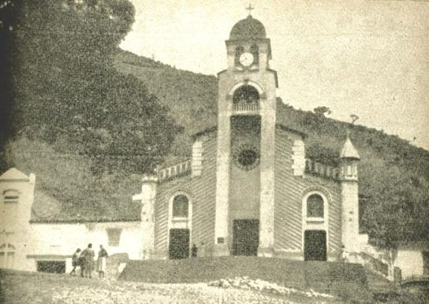
Templo parroquial anterior
Templo erigido por el padre Jesús María Duque en 1928 y demolido en los años 50.
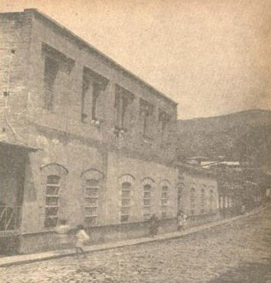
Escuela Urbana de Varones Jesús María Duque
Plantel demolido en los años 70 por deterioro a causa de una inundación de la población.

Escuela urbana de niñas Concepción Restrepo
Plantel demolido en los años 80 por deterioro por deterioro ambiental.
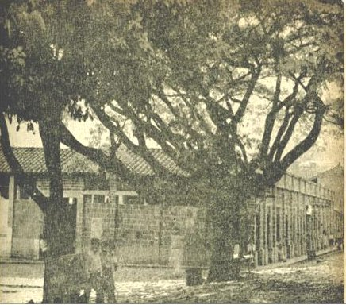
Anterior plaza de mercado
Hermosa construcción de los años 30, demolida en los años 90 por caprichos políticos de la gobernante de turno. Era el lugar de regocijo de los cisnereños y el punto de encuentro de sus comerciantes.

Parque Enrique Olaya Herrera
Anteriormente conocido como Parque de los Jubilados porque era costumbre que los pensionados del ferrocarril se encontraran alli, todos los días en la tarde. Lugar de muchas anécdotas con las caidas de los pandepobre y la cosecha de mamoncillos.

Colegio para señoritas
Fachada del Colegio que funcionaba como internado de niñas. Fue creado por el padre José Abel Díaz y el médico Tulio Vásquez V. y regido por las Hermanas de la Presentación bajo la dirección de doña Clementina de Yepes.

El Guaje
El Guaje. Hasta muchos años, después de cuando se abrió el túnel, funcionó como el taller del ferrocarril de esta división. Aquí se ensambló la Locomotora 45 y se repararon incontables locomotoras, vagones y dispositivos de los trenes.

Casa de los ingenieros
Fue el lugar de alojamiento de los ingenieros durante la inauguración de la Estación Cisneros en 1910 y durante muchos años después. Luego, pasó a ser la casa del Jefe de Estación; por último fue el consultorio médico de los ferroviarios.

Cambiavías
Consiste en un dispositivo mecánico que permite a los trenes pasar de una vía a otra. Se compone de agujas (rieles móviles) y un corazón, permitiendo la bifurcación o el cruce en la infraestructura ferroviaria. Su operación era manual.
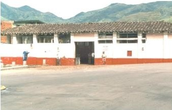
Plaza de mercado anterior
Esta imagen fue lograda, solo unos cuantos meses antes de ser demolida en los años 90 por caprichos políticos de la gobernante de turno. Era un referente identitario de los cisnereños desde los años 30 y el eje económico de la localidad.
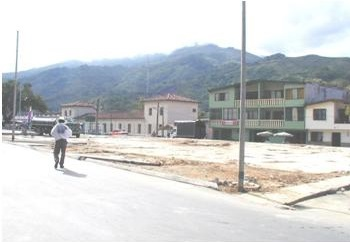
Sustancia imaginaria
Espacio vacío donde estaba ubicada la Plaza de Mercado.

Teatro municipal
Pregón de fantasías e ilusiones juveniles. Ambientes de la más fascinante frescura espiritual. Regocijo de señores que esperaban con afán el lunes para ver en las pantallas el encanto de las formas naturales, gustosas y placenteras de féminas ardientes.
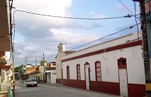
Asilo de ancianos
El asilo de ancianos Juan XXIII fue creado por el Padre Iván Londoño, el 1° de diciembre de 1965 y funcionó hasta finales del siglo XX.

Carretera Cisneros-Santiago-Cisneros
Antes de abrir paso por el Túnel de La Quiebra, y de inaugurarse la Estación El Limón en 1920, el transbordo de la carga y de los pasajeros se hacía desde Cisneros hasta Santiago y viceversa (inclusive, algunos años, desde Botero ), en coches tirados por caballos. Desde 1917, cuando se construyó la primera carretera del departamento, El Limón-La Quiebra, se continuó haciendo el transbordo desde allí. Así no hubiera estación, los trenes iban hasta El Limón, lo que acercó más a los pasajeros a Santiago.
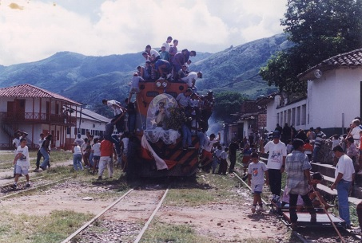
Fiesta ferroviaria de la Virgen del Carmen
Cada 16 de julio, los ferroviarios, marineros y conductores, celebran la fiesta a la Virgen del Carmen. Cisneros, no era la excepción. Siempre se destacaron por ser una celebración cultural y religiosa. El recorrido del tren con la imagen de la virgen, partía desde Santiago. La veneración terminaba con una ceremonia litúrgica y era desbordada en elogios a la Virgen.
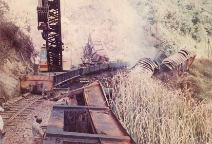
Accidente
Imagen de un accidente ferroviario ocurrido en la vía Sofía-Cisneros. Aunque no sucedía con frecuencia, se presentaban, lo que ocasionaba grandes pérdidas económicas e incluso humanas.

Casa de máquinas de la Planta Eléctrica
La Planta Eléctrica de El Limón fue una iniciativa de la empresa canadiense Fraser and Brasier para iluminar los trabajos en el túnel, pero no solo se le dio luz a la construcción, sino a la pequeña población. Inclusive, Cisneros se benefició de su luz durante muchos años, solo cuatro horas en las noches, así solo su fuerza alcanzara para iluminar el filamento de los bombillos.

Subestación
Subestación El Limón, repartidora de energía de 1 megavatio que le dio luz a la construcción de El Túnel, a El Limón y a Cisneros.

Casa de ingenieros de la planta de energía
Edificación con arquitectura ferroviaria republicana con influencia de la arquitectura vernácula antioqueña en la que se hospedaron los ingenieros de la compañía Fraser & Braser que dirigieron la construcción de la Planta Eléctrica de El Limón.

La Casa de los ingleses
Edificación con arquitectura ferroviaria republicana de influencia inglesa construida por el Ferrocarril de Antioquia para alojar a los ingenieros constructores del túnel. Después de abierto el túnel, se utilizó como hotel, lo que la convirtió en un referente turístico muy apetecido por los europeos; en los años 80, funcionó como refugio de gamines (ACARPIN), dirigido por el Padre Montoya, quien lo sostuvo pidiendo limosna en el tren; después de iniciado el siglo XX, fue el alojamiento de los obreros de una mina y en la actualidad (2026) es un restaurante.
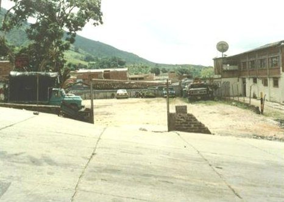
Parque Infantil Sargento Arango
Primer parque infantil de Cisneros, obra de señor sargento Arango, quien por su iniciativa adelantó una campaña pro-parque para los niños y con sus recursos y los de la gente, lo abrió al público a comienzos de los años 70. Fue utilizado como el lugar de instalación de la ciudad de hierro, de los circos. En los últimos años, viene operando como parqueadero y punto de venta de comidas rápidas en las Fiestas del Riel.
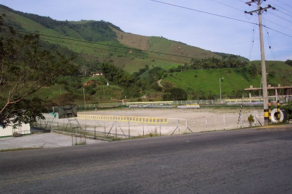
Cancha de fútbol La Cristalina
A finales de los años 70, Cisneros construyó su propia cancha de fútbol aledaña al barrio La Cristalina. Antes, los partidos de fútbol, se jugaban en la cancha de Versalles, corregimiento de Santo Domingo. Aunque es un referente deportivo, se quiere resaltar su origen. Obsérvese a la derecha el coliseo en construcción.

La Cristalina
En esta imagen del año 79, se puede observar el centro deportivo en su forma más original. La cancha de fútbol sin graderías; la cancha de voleibol; el recién nacido barrio La Cristalina y los estaderos La Playa y los Coronado, al fondo. Las dinámicas ambientales, transformaron el lugar. Foto de don Alonso Vera
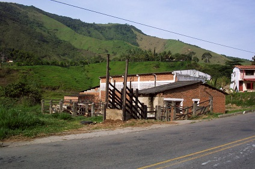
Matadero municipal de reses
Uno de los referentes históricos más importantes de Cisneros fue su matadero de reses. Inicialmente, estaba ubicado en el sector El Uno; muchos años después, en La Cristalina donde operó hasta comienzos del nuevo siglo. Tanto en el primero, como en el último lugar, fue un centro de referencia de identidad colectiva por su expresión ambiental de la vida local, es decir, adquirió significación como hecho territorial. Son incontables las historias que se tejieron alrededor de este referente.

Calle Girardot
Vista panorámica de la calle Girardot en el año 1979. Imagen tomada por don Alonso Vera.

Camino a La Plancha
Imagen de lo que era la vía que conduce a los charcos de Cisneros, entre ellos, La Plancha. Bastante pedregoso y muy difícil de transitar; sin embargo, así, fue un referente turístico altamente visitado por los turistas que venían en tren. Foto Alonso Vera.

Clavellina, parte baja
Parte baja de Clavellina en 1979. Fue uno de los primeros barrios de Cisneros. Aquí se puede observar la transformación que ha tenido a lo largo de estos cincuenta años. Foto de Alonso Vera

Liceo, El Cristo, Cementerio y San Germán.
Liceo, El Cristo, Cementerio y San Germán, en 1979, según imagen tomada por don Alonso Vera.
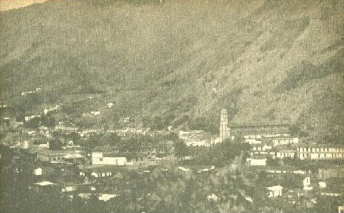
Cisneros, años 50
Panorámica de Cisneros de los años 50 o antes. La diferencia la marca el anterior templo parroquial que todavía se ve en pie.

Villa Laureles, año 2000
Nació en los años 90 como un programa de solución de vivienda de la administración de doña Nelly Quintero. Hoy está totalmente diferente.
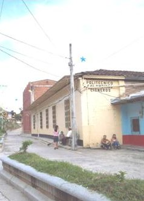
Politécnico Jaime Isaza Cadavid
El Politécnico Jaime Isaza Cadavid, Centro Regional Nordeste Cisneros, abrió sus puertas desde el año de 1988, con dos programas Tecnología en Producción Agropecuaria y Minas.En 1993, se abrieron otras tecnologías como Costos y Auditoría, Construcciones Civiles y Educación Física. Se implementó también, las Licenciaturas en Educación Física Recreación y Deporte; Agroambiental y Ciencias Naturales. Este instituto le dio cobertura a los municipios de Cisneros, Caracolí, Maceo, San Roque, Yolombó, Santo Domingo, Gómez Plata, Barbosa y a los Corregimientos de San José del Nus, Cristales y Santiago.
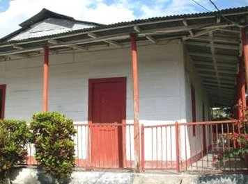
La Casa de los totumos
Aún con su estructura original, techos de zinc, paredes de cancel y piso de madera, se encuentra esta que se construyó como oficina central de la terminal de transporte férreo cuando la estación estaba ubicada en el Liceo Cisneros, aproximadamente en el año de 1909. Posteriormente, esta casa se acondicionó como centro médico y era donde atendía el Dr. Adán Rendón. Hay quienes afirman que aquí nació el poeta y escritor Carlos Castro Saavedra y vivió sus primeros años de vida.
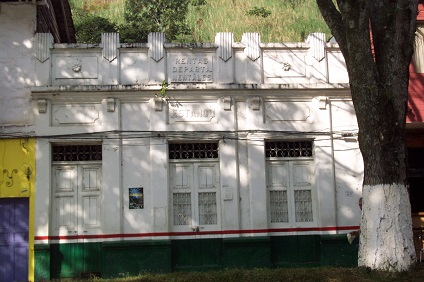
Rentas departamentales y estanco
El primer administrador fue don Rafael Piedrahita en 1912, aproximadamente. Se desconoce si esta es su ubicación original, porque el edificio actual es de los años 30. Era el punto de recaudo de los impuestos, pero también el punto de venta del aguardiente y ron antioqueño.
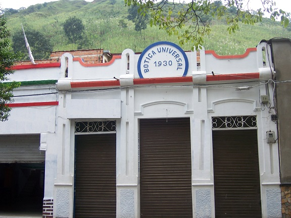
Botica universal
Desde los años 30, funciona como el lugar donde los boticarios preparaban y almacenaban remedios compuestos de minerales y hierbas antes de la industrialización de medicamentos, convirtiéndose en el equivalente histórico de la farmacia moderna. Uno de los boticarios más recordados en Cisneros, fue don Fabio Gaviria.
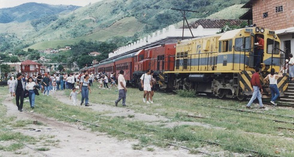
El mixto bajando
La imagen evoca la llegada de un tren de pasajeros a la estación Cisneros, de los años 90 hacia atrás. La Estación Cisneros era un referente de movilización social, pero también un imperativo territorial.
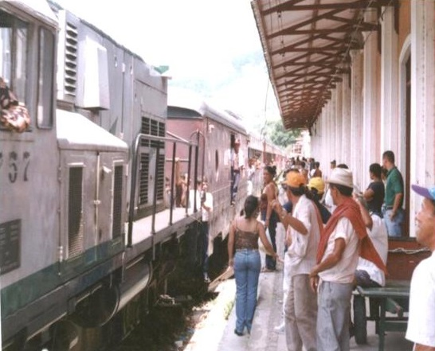
Tren de pasajeros, bajando
La imagen evoca la llegada de un tren de pasajeros a la estación Cisneros que era un referente de movilización social, pero también un imperativo territorial.

Estación 1979
Así era la Estación Cisneros en su entrada principal; pero resalta la taquilla de venta de tiquetes, todavía con su barra de orden de fila y rejilla de seguridad; así mismo, el tablero informativo que indicaba la distancia con respecto a Medellín (Km 84), a Sofía (a 8.5 km) a El Limón (a 9 km) y a Puerto Berrío (104 km). El riel vertical, cumplía dos funciones: (a lo largo del trayecto nacional) una, distancia de Cisneros, con respecto al nivel central: km 435 + 19 m y dos, elevaban los cables magnéticos de comunicaciones. Foto de don Alonso Vera.

Maniobras en patios
Hermosa imagen que refleja la identidad de los cisnereños como una bisagra entre el artificio y la cultura. Aquí, un tren hace maniobras en los patios de la Estación y se observa lo cotidiano como expresión ambiental de la vida local que se convierte en lugar de referencia de la identidad colectiva. Obsérvese a los niños 'pegados' del tren y la mirada indiferente del frenero; el objetivo era tirarse del vagón en movimiento. Esto era lo común, lo frecuente, lo cotidiano. Cisnereño que se respetara, se le sabía tirar al tren. Foto del señor Alonso Vera en 1979.

Piñón de oreja
Este enorme árbol centenario que alcanzaba una altura de casi 20 metros, hacía parte del inventario natural de la población, pero un día enfermó y se convirtió en una amenaza para el vecindario. Después de talado, el maestro Darío Sucerquia lo talló con imágenes alusivas a la historia de Cisneros, convirtiéndose en un atractivo de la localidad. Photo de don Alonso Vera, 1979.

La 45, sin cubierta
Fue la primera en cruzar el Túnel de La Quiebra. Es el emblema municipal por excelencia desde 1973. En esta imagen de 1979, todavía figura sin su cubierta y con todos sus dispositivos. Foto de don Alonso Vera.

Remodelación del templo parroquial
Entre los años 2019 y 2024, los templos parroquiales de Antioquia promovieron con sus comunidades una renovación de su estructura. La parroquia Nuestra Señora del Carmen, no fue la excepción; el altar y la zona de atención a los parroquianos fue remodelada, tal y como lo muestra la imagen, por el párroco Víctor Ubeimar Gutiérrez. En el 2024, con la llegada de Monseñor Nicolás Mejía, y ante la inconformidad de la comunidad, se recuperó el tradicional diseño que tenía.

Tradicional domingo de mercado
Si existe una imagen que enmarque la más tradicional expresión ambiental de la vida local como lugar de referencia de identidad colectiva, en otras palabras, que enmarque el lugar en su carácter íntimo, en su personalidad diferencial, de lo anecdótico e individual al lugar como significación universal es esta. Las generaciones de los años 80 hacia atrás, todavía tienen esculpida en su memoria las vivencias que evoca esta foto. Llama la atención el cartel pegado a la pared. Es una invitación a la comunidad a celebrar las bodas de plata del Liceo Departamental (1964-1989) en el hotel El Turista. Foto de Alonso Vera.

Domingo de mercado
Protagonistas, algunos vivientes, de un domingo de mercado en la Plaza en 1989. Foto de don Alonso Vera.

Poncherazo
Esta imagen refleja Cisneros en su carácter íntimo, Cisneros como el lugar de lo anecdótico. Este señor fue uno de los mejores empíricos exponentes de la fotografía tradicional y artesanal en Cisneros con asesoría de imagen incluida. Él indicaba delicadamente cuándo y cómo sonreir, qué traje ponerse, tenía prendas disponibles para lucir mejor en la imagen. La comunidad cariñosamente lo llamaba 'Poncherazo' porque así denominaba él su técnica que consistía en introducir la mano a través de una talega negra, conectada a una caja mágica que estaba incrustada a un trípode y, tras accionar un dispositivo, disparaba un flash y en un par de minutos, salía la foto. Su estudio era el andén de la cafetería La Popular, donde ubicaba su silla y lucía con orgullo el mostrario de sus más artísticas muestras.

Puente Real
Cisneros se conectó con otras veredas y localidades en la ruta hacia el Magdalena Medio, a través de la construcción del Puente Real o Puente de Hierro sobre el río Nus. Con la desaparición del tren, se aumentó el flujo vehicular de buses y camiones, lo que obligó a la construcción de otro puente de mayor resistencia. El anterior, se utiliza en la actualidad como paso peatonal. Foto de don Alonso Vera en 1979.

El cementerio en 1979
Hermosa panorámica que muestra el cementerio parroquial Nuestra Señora del Carmen en 1979, casi que en su estado inicial. La construcción del actual Campo Santo data del año de 1930. Dirigió la obra el señor Tomás Atehortúa y la continuó don Jesús María Toro, quien fue su administrador hasta 1946, cuando lo reemplazó el señor Emilio Casas. Este cementerio se inauguró el 20 de julio de 1934 por el Padre José Joaquín Zuluaga, con una solemne misa y elocuente sermón a cargo del mismo sacerdote. La primera bóveda fue hecha por Juancho Olaya y el día de su inauguración fue inhumando el cadáver de la señora Cipriana Márquez de Castaño, madre de uno de los donantes del terreno, don Rafael Castaño.
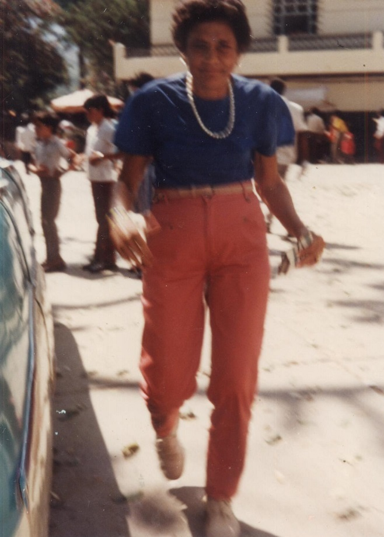
Lucila Gaviria
Furibunda defensora de los intereses ferroviarios. Nunca permitió que alguien se subiera a la locomotora 45, emblema de la municipalidad, pues si alguien lo hacía, se sometía a los bastonazos que ella le propinara y al rosario de palabras del mál grueso calibre que existieran. Gran conocedora y cantora de tangos. Muchas veces, a las 7 de la mañana, se le oía cantando, por una de las ventanas de su casa, un tango de Gardel o de Angelis. Vivió casi toda la vida con su hermano Luis Gaviria, pensionado del ferrocarril.

Don Alfonso Ricaurte
Personaje muy querido y recordado por la comunidad cisnereña. Tuvo el privilegio de ser maquinista de la Locomotora 45; era reconocido como uno de los líderes más destacados de funcionarios del ferrocarril. Después de jubilarse, se dedicó a entrenar la selección de fútbol de Cisneros que se destacó por ser la única que ha disputado un campeonato departamental de fútbol en el estado Atanasio Girardot. Uno de sus sobrinos y de sus nietos, Carlos Alberto y Guillermo, fueron jugadores del Atlético Nacional.
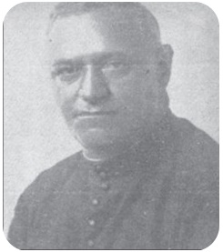
Padre Jesús María Duque
Líder de la campaña emancipadora pro municipio y gestor de obras sociales como la construcción del hospital y vías de penetración. Llegó de Santo Domingo, Antioquia, a comienzos de 1910 a ejercer como capellán del ferrocarril, pues el padre Jesús María Salazar, terminaba su carrera sacerdotal. A partir de entonces, comenzó una labor pastoral, social y hasta política, por la población. Como no había escuelas, fue el profesor de los niños de los trabajadores del ferrocarril; como no había templo, improvisó una capilla en la Estación; movió todas las fuerzas de energía social para emprender la construcción de muchas vías de ingreso a la población, especialmente veredales. Cuando ya la población tenía todos los estamentos sociales, políticos y administrativos, emprendió una campaña arrolladora por la municipalización de la localidad con el apoyo de otros líderes como los señores Pedro A. Londoño, Rafael Piedrahita, Manuel Agudelo, José Urbano Trujillo, Rafael Castaño y Manuel Montoya, hasta que lo consiguieron el 3 de abril de 1923. Un día trajo un grupo de seminaristas a una convivencia en Cisneros. Todos ellos vestían sotana negra. Un parroquiano queriéndose pasar de listo, expresó: “¡Qué gallinazada!” Y el Padre Duque le replicó: -“Y no alcanza para tanta mortecina”.
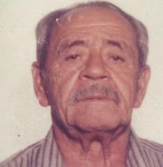
Don Octavio González 'Buñuelo'
Tuvo el privilegio de ser maquinista de la locomotora 45. Nació en Cisneros y se jubiló con el Ferrocarril de Antioquia. Cada año, era el promotor y organizador de las fiestas a la Virgen del Carmen. Después de retirado, entrenó a la selección de fútbol de Cisneros del año 1974 con don Alfonso Ricaurte.
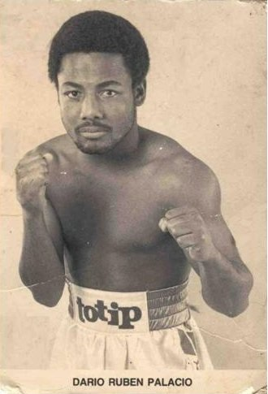
Rubén Darío 'El Huracán' Palacio
Aunque no nació en Cisneros, vivió en esta localidad y fue aquí donde hizo sus primeros pinitos como boxeador bajo la tutoría del señor John Jairo Toro Rico; luego partió a Medellín donde comenzó a entrenar en la liga bajo el fichaje de Jimmy Martin. Sus entrenadores fueron Reinaldo López y Manuel Mendoza González. Tras una carrera exitosa el 27 de septiembre de 1992, se coronó campeón mundial de boxeo al derrotar al británico Mc Millan.

Eladio Antonio Ramírez Vásquez-Conrado Botero Betancurt
El ingeniero Eladio Ramírez, nació en Cisneros donde hizo sus estudios básicos y se graduó como el mejor bachiller de la promoción 1980. Fue el primer alcalde elegido por la voto popular en Cisneros, el 1° de junio de 1988. Se ha destacado por ser un reconocido dirigente empresarial. En la actualidad, es el presidente ejecutivo de la Cámara de Comercio de Urabá.
El Abogado Conrado Botero, nació en el Valle, pero desde los 11 años de edad, llegó a vivir a Cisneros, donde se graduó como bachiller en la segunda promoción del Liceo Departamental Integrado de Cisneros. Fue concejal durante más de 10 años y en cuatro oportunidades, presidente del Concejo Municipal, además de haber ocupado otros cargos públicos en el ámbito departamental y municipal.
Fue el último alcalde de Cisneros, según Decreto 3424 del 19 de noviembre de 1987, expedido por el señor Gobernador de Antioquia doctor Fernando Panesso Serna. Se posesionó ante la doctora Irma Bustamante, quien era la Jueza Promiscua Municipal y tuvo bajo su responsabilidad la organización de las primeras elecciones municipales para alcalde por votación popular en las que resultó elegido el ingeniero Eladio Ramírez. Ocupó su cargo hasta el 31 de mayo de 1988.

Nelly Quintero Piedrahíta
Reconocida dirigente política. Fue la primera mujer en gobernar la localidad, además de ser la única persona que ha sido alcaldesa durante tres periodos: 01 06 92 al 31 12 94; el 01 de enero de 2001 al 31 de diciembre de 2003 y el 01 de enero de 2012 al 31 de diciembre de 2015. Su liderazgo, no solo fue social sino, también, político y no solo lo derrochó en Cisneros, sino también en otras poblaciones como Yolombó, San Roque, Santo Domingo, Puerto Berrio, entre otros municipios, donde ejerció como asesora en procesos sociales e institucionales. Precisamente, esa arrolladora capacidad de liderazgo y el carisma que le inspiraba a la gente, permitieron que su partido la proyectara en una campaña política como candidata a la Cámara de Representantes, pero la respuesta de la gente no fue la esperada. Además de sus alcances sociopolíticos, se destacó por ser una gran madre, mujer locuaz e ingeniosa y líder social. Su particularidad para expresar lo que sentía, para afirmarlo o para 'frentiar el corte' como comúnmente se dice y de lo que toda la población puede dar fe, hace parte de su impronta personal e intransferible. Aunque venció incontables adversidades, la única que nunca se podrá verncer, le arrebató la vida el 25 de enero de 2022.
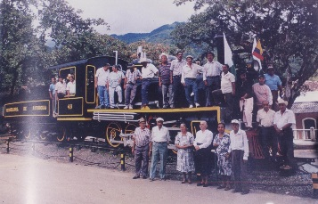
Héroes del desarrollo de Antioquia
Histórica imagen de finales de los años 70 que recoge a los icónicos protagonistas del ferrocarril de Antioquia en Cisneros.
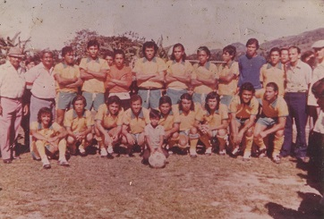
Selección Cisneros 1974
Selección Cisneros año 74. Histórica Selección de Cisneros que hizo vivir los más bellos momentos de emoción y júbilo a toda la población con sus gambetas, goles y triunfos en la década de los años 70. Durante todo el año 70, la Selección Cisneros impuso el respeto y la jerarquía frente a todos los equipos de Antioquia, pero por falta de recursos económicos y apoyo, nunca obtuvo el tan anhelado campeonato intermunicipal, aunque siempre se acercaba; casi todos los años ocupaba el 3º o 4º puesto, pues selecciones como Segovia, Apartadó o Puerto Berrío, siempre se le interponían.Aparecen de izquierda a derecha: Don Octavio González “Buñuelo”, don Alfonso Ricaurte “Picho”; Fabio Pino; Jorge Mario Castrillón (Kalaika o Toto) , Rubén Gutiérrez (arquero) Jorge Rúa “El Grillo”; Oscar Vargas “Cácaro”; “Lento” Palacio; Manuel Cadavid “El Apache”; Marcos Vargas (Chita); Oscar Agudelo “Mincho”; Ernesto Montoya “Chipolo”. Abajo: Jesús Velásquez; Octavio Cardona; Mauro Monroy; Conrado Gómez (hermano de “Piña); Fernando Buriticá; Isidro Monsalve; Germán Rengifo “El Mocho”; Juan Alonso Ricaurte (Padre del actual Juan Guillermo Ricaurte) y Oscar Gallego (pensionado del Ferrocarril). Foto: Buñuelo.

Selección Cisneros 1976.
Para la 2ª mitad de los años 70, esta selección (la única en la historia de Cisneros, hasta la actualidad) disputó una final departamental en el estadio Atanasio Girardot. Cisneros le ha entregado un valioso aporte al fútbol profesional. El primer jugador de fútbol profesional que tuvo el municipio fue “El Chomo” Cadavid que jugó en el Independiente Santafé, Deportes Quindío y el Deportivo Táchira, en Venezuela. Otro futbolista de más trayectoria y fama, heredero de las enseñanzas que les diera su tío don Alfonso Ricaurte “Picho”, fue Carlos Alberto Ricaurte que militó en las toldas del Atlético Nacional donde fue campeón en el año de 1981 y del América de Cali. De la misma estirpe de “Picho”, surgió Juan Guillermo Ricaurte que con sus goles fueron muchas las alegrías que le brindó a los cisnereños y seguidores del equipo verde. Fue campeón con el equipo en el año 2005. En la imagen, aparecen de izquierda a derecha: Sergio Hernán Jiménez, Joaquín Pino “Niño”, Adolfo León Ricaurte; Jorge Rúa “El Grillo”, Manuel Cadavid, Felipe Castrillón, Conrado Gómez “Piña”, Gustavo Cano, Óscar Vargas “Cácaro”, Alfonso Ricaurte “Picho” y Ernesto Montoya “Chipolo” entrenadores. Abajo: Fernando Gaviria “Sardino”, Isidro Monsalve “Ñeque”, Mauro Monroy, Gilberto Rodelo (sobrino del profesor Caneva), Luis Emilio Henao Pelusa, León Ríos y Guillermo Giraldo “Morenazo”. Cortesía de la familia Ricaurte.

Escuela urbana de varones 1927
La imagen tiene una atmósfera muy propia de las primeras décadas del siglo XX en Colombia o en algún contexto latinoamericano rural/semirrural. En la parte baja parece leerse algo como: “…de varones 4° y 5° año Cisneros - 1927. La palabra del inicio está bastante deteriorada, pero podría ser el nombre de la escuela e indudablemente era Escuela Urbana de Varones que fue como siempre se conoció la que hoy es Jesús María Duque. La caligrafía y el estilo de inscripción fotográfica, le dan al año 1927 bastante coherencia histórica y visual. Indudablemente, se trata de una fotografía escolar o de internado de varones. No caben dudas, que el lugar es lo que hoy en día es la sede del Liceo Cisneros En la imagen, se pueden ver elementos humanos profundamente reveladores como la mezcla entre niños elegantemente vestidos y otros descalzos . Al extremo izquierdo de la primera fila inferior de niños que están de pie, se puede observar la imagen de una niña, impecablemente vestida, lo que es notable, porque no lleva pantalón, sino vestido; además, su gorra y su chaqueta, difieren de la de los niños. En conclusión, la fotografía no solo registra estudiantes; registra una forma de vida, y eso le da un valor histórico incalculable y mucho valor para la memoria educativa, historia local y patrimonio visual cisnereño. Foto de don Alonso Vera.

Estación Cisneros
Inaugurada en 1910 por el señor presidente de la república Ramón González Valencia. Declarada Patrimonio Nacional. Es una de las pocas estaciones de ferrocarril que aún quedan en Antioquia

Estación Cisneros
Inaugurada en 1910 por el señor presidente de la república Ramón González Valencia. Declarada Patrimonio Nacional. Es una de las pocas estaciones de ferrocarril que aún quedan en Antioquia.

Locomotora 45
Fue la primera en cruzar el Túnel de La Quiebra. Es el emblema municipal por excelencia desde 1973.

Museo Ferroviario
Museo ferroviario en La Estación Cisneros.

Estación El Limón
Estación El Limón.

Túnel de La Quiebra
Inaugurado el 7 de agosto de 1929. Es el eje del desarrollo comercial e industrial de Antioquia. Tiene una extensión de 3.742 m. y se construyó según los diseños del ingeniero Alejandro López Restrepo. Aunque no está en jurisdicción del municipio de Cisneros, se cuenta como uno de sus referentes patrimoniales por su cercanía a la localidad.

Ingeniero Alejandro López Restrepo
El ingeniero Alejandro López Restrepo, nació en Medellín el 4 de junio 1876 y murió en Fusagasugá en marzo de 1940.
Cuando presentó la tesis de grado 'El Paso de la Quiebra del Ferrocarril de Antioquia' en 1899, los jurados la impugnaron por considerarla 'soñadora', siendo rector de la Facultad de Minas el ingeniero Pedro Nel Ignacio Tomás de Villanueva Ospina Vásquez. 30 años después, siendo este presidente de la república y conocedor del trabajo de López, la propuso, y se convirtió en el sustento técnico para que el gobierno nacional contratara la construcción del Túnel de la Quiebra.

Ingeniero Francisco Javier Cisneros
El ingeniero Francisco Javier Cisneros, nació en Santiago de Cuba el 28 de diciembre de 1836 y falleció en Nueva York el 7 de julio de 1898. Fue el diseñador de los trazos para la construcción del ferrocarril de Antioquia; también dirigió la construcción del muelle de Puerto Colombia, población de la que también fue su fundador; así como del municipio de Puerto Berrío, al establecer el puerto en 1875. Como homenaje a su obra, tanto la población de Cisneros como la Estación, llevan su apellido.

Dr. Tulio Vásquez Betancourt.
El doctor Tulio Vásquez Betancourt, médico egresado de la Universidad de Antioquia en 1929. El doctor Tulio Vásquez Betancourt, definió en Cisneros dos proyectos vitales: su realización como médico y su vocación política.
Aunque la brevedad de su vida solo alcanza los 36 años de edad, largo es el historial de sus actuaciones. Su consultorio estaba ubicado en La Casa de los Totumos (vivienda de estilo colonial situada a un costado del Liceo Cisneros).
Una de sus mayores obras fue la gestión que hizo ante el ferrocarril de Antioquia para que la terminal de transporte férreo (lo que hoy es el Liceo Cisneros) se le asignara a la parroquia para la instauración de un colegio para señoritas.

Padre Jesús María Duque
El padre Jesús María Duque fue el primer sacerdote de Cisneros. Líder de la campaña emancipadora pro municipio y gestor de obras sociales como la construcción del hospital y vías de penetración. Llegó de Santo Domingo, Antioquia, a comienzos de 1910 a ejercer como capellán del ferrocarril. A partir de entonces, comenzó una labor pastoral, social y hasta política, por la población. Como no había templo, improvisó una capilla en la Estación; movió todas las fuerzas de energía social para emprender la construcción de muchas vías de ingreso a la población, especialmente veredales. Cuando ya la población tenía todos los estamentos sociales, políticos y administrativos, emprendió una campaña arrolladora por la municipalización de la localidad con el apoyo de otros líderes como los señores Pedro A. Londoño, Rafael Piedrahita, Manuel Agudelo, José Urbano Trujillo, Rafael Castaño y Manuel Montoya, hasta que lo consiguió el 3 de abril de 1923.

Presidente Enrique Olaya Herrera
Presidente de Colombia entre el 7 de agosto de 1930 y el 7 de agosto de 1934. Cisneros le rinde homenaje desde 1930, año en que fue inaugurado el parque que lleva su nombre.
Aunque no existen registros históricos que lo evidencien, por tradición oral se cree que fue él quien gestionó los recursos para su construcción cuando vino a la inauguración del Túnel de La Quiebra el 7 de agosto de 1929.

Simón Bolívar
Nació en Caracas, Venezuela, el 24 de julio de 1783 y murió en Santa Marta el 17 de diciembre de 1830. Fue el 1.er presidente de la Gran Colombia bajo un régimen dictatorial, desde el 27 de agosto de 1828.
Es conocido como el Libertador, fue un militar, estratega y político venezolano, líder fundamental de la independencia de lo que son hoy Venezuela, Colombia, Ecuador y Panamá.

Monumento a la madre
El monumento no es otra cosa que la representación de la maternidad como núcleo de la vida familiar y social, de la atención en el vínculo materno, el cuidado, la protección y el amor incondicional, lo que suele simbolizar estabilidad, refugio y permanencia.
La madre sentada funciona casi como un “centro” estable alrededor del cual gira la vida de los hijos.
El contexto donde está ubicada también habla: La iglesia al fondo puede reforzar ideas de familia, comunidad y valores tradicionales.
El parque abierto hace que la obra no se vea como algo privado, sino como un homenaje colectivo a la figura materna, incluso podría interpretarse como una alegoría de la continuidad generacional, la madre cabeza de familia como fundamento del pueblo.
Hay un detalle muy bonito: la niña mira al bebé; no mira hacia otro punto. Eso puede simbolizar el futuro, el crecimiento, la vida que continúa más allá del cuidado materno inmediato. La madre mira el presente; la niña parece mirar el mañana.

Escultura natural de Cisneros
Este monumento parece funcionar como una “memoria viva” de Cisneros, tallada directamente sobre el tronco de árbol muerto de un piñón de oreja, lo cual ya tiene un simbolismo muy fuerte: el árbol representa las raíces, la permanencia y la memoria del pueblo. Aunque el tronco haya sido cortado, sigue “hablando” a través del arte. El hecho que el maestro Sucerquia use el tallo de un piñón de oreja, no es casual. Este tipo de árbol suele asociarse con sombra, encuentro y antigüedad en los parques de los pueblos. Al convertirlo en monumento, el maestro transforma naturaleza en memoria; convierte el árbol en “archivo histórico”; y sugiere que la historia de Cisneros está profundamente enraizada en su territorio. Es algo así como si el pueblo dijera: “Nuestra historia nace de aquí mismo.”
El monumento honra a los obreros del ferrocarril, la apertura del túnel y las montañas, el esfuerzo físico de los trabajadores y el papel estratégico de Cisneros en la historia regional. La obra no busca belleza clásica ni perfección anatómica. Tiene un estilo expresionista y popular.
El monumento podría resumirse así: Cisneros nace de la montaña, del trabajo humano y de las generaciones que construyeron el pueblo con esfuerzo. Aunque el tiempo pase, las raíces y la memoria permanecen vivas. Hay algo muy bonito en todo esto: el maestro Darío Sucerquia no puso la historia en mármol frío, sino en madera enraizada, como si el pueblo todavía estuviera creciendo.

Alexis Escobar
Alexis Escobar nació en el municipio de Bello, Antioquia, el 16 de junio de 1987. Pasó la mayor parte de su infancia viviendo solo con su madre Mabel Escobar en Cisneros, Antioquia, pero al cumplir sus 11 años de edad regreso a su municipio natal.
A los 15 años de edad, empezó a dar a conocer una de sus tantas virtudes, su buena voz y la tranquilidad con que se presenta ante el público. Este artista, con más de 50 canciones grabadas, entre ellas «No me da la talla», «La Tusa», «Así es la Vida» y «Un Don Juan», quiere conquistar nuevos horizontes y poner al mundo entero a cantar «música pa’l pueblo».
Alexis Escobar sigue trayendo éxitos musicales como «En Mi Cama» y «La Tengo Viva» En 2023, le compuso una canción a Cisneros llamada «Mi Cisneros».

Efraín López, el Enano Gigante.
Efraín López, conocido artísticamente como 'El Gigante del Despecho' o el 'Enano Gigante', es un cantante y compositor de música popular, parrandera y de despecho muy querido en el nordeste antioqueño. Es especialmente famoso en Cisneros (Antioquia), su tierra adoptiva, a la cual le ha dedicado canciones y homenajes musicales. López es una figura destacada en la región por sus presentaciones en ferias locales y municipales.
Su repertorio abarca géneros tradicionales, música tropical, paseítos y canciones de despecho. Entre sus temas más icónicos se encuentran:'Soy de Cisneros': Un homenaje musical a su municipio, en el que destaca los paisajes locales (como el Túnel de la Quiebra), el Museo Ferroviario, los charcos y la tradicional torta de pescado.
'El Gigante del Despecho': Canción que le da su nombre artístico y que resalta con humor su historia personal.

Desfile tradicional de mitos, leyendas y comparsas.
Desfile tradicional de mitos, leyendas y comparsas en el marco de las Fiestas del riel y la antioqueñidad. Las fiestas del Riel y la Antioqueñidad son unas fiestas tradicionales que se vienen realizando en Cisneros desde 1993, después de la primera semana de agosto, como una prolongación de las fiestas patronales de la Virgen del Carmen que realizaban los ferroviarios. A partir del 20 de agosto de 1999 y mediante Acuerdo número 17 de esa misma fecha, el Concejo Municipal de Cisneros las institucionalizó.
Entre la variada programación que ofrece las Fiestas, lo más destacado es el Desfile tradicional de mitos, leyendas y comparsas que es un carnaval en el que la comunidad se reúne para expresar su identidad cultural. Su objetivo es rescatar y mantener vivas las raíces ancestrales e historias fantásticas transmitidas de generación en generación.
Son clásicas aquellas historias referentes a algunos personajes muy arraigados en la cultura cisnereña y paisa, en cuya existencia, en realidad, algunos creen como la "Patasola", "la Madremonte", el "Sombrerón", el "Ruanón", el "Cura sin cabeza", "La Dama Verde", la Madre del agua, "La Llorona" y el "Judío Errante". La mayoría de estas leyendas se originaron entre la época colonial y finales del siglo XIX. (Imagen tomada en 2007.)


Artesanías locales
Las artesanías sobre temas locales son una práctica cotidiana por parte de cisnereños que, con sus productos, lo que quieren es expresar identidad cultural mediante los cuales convierten la historia, tradiciones y saberes de un territorio en objetos físicos. Esta práctica actúa como un vehículo de memoria que preserva oficios artesanales y refleja la manera en que una comunidad interpreta su entorno y su pasado. Estos objetos son una forma de reafirmar sus raíces y mantener vivas sus costumbres.


Subido
La cultura panelera en Cisneros tiene más tradición que la cultura ferroviaria y, aunque el tren ya es una sustancia imaginaria y la panela todavía es consumida por los cisnereños, inclusive es su principal fuente de ingreso económico, la cultura tren tiene mucho más arraigo y se considera el eje de la identidad cultural de los cisnereños. Sin embargo, la cultura de la panela, no se queda atrás.
Hasta los primeros años del siglo XXI, era tradicional ir en familia, en grupos de amigos, en parejas o solo, principalmente los fines de semana, a los trapiches paneleros a ver el proceso de la producción de la panela, a comer 'conejo', a encargar un 'blanquiao', y era crucial preparar un 'subido'. La gente de esacasos recursos económicos, recorrían los trapiches más cercanos para pedir 'una bolita' de panela y así, asegurar el desayuno y la cena de la semana. Aunque hoy en día esas prácticas ya no son tan frecuentes, algunos trapiches, continúan con algunas de esas tradiciones, pero en planes turísticos, lo que ha permitido que esa cultura no desaparezca.
Uno de los atractivos turísticos de Cisneros se denomina 'Trapiche al parque' que consiste en re-crear un trapiche como el que se aprecia en la imagen, extraer el jugo de la caña, procesarlo y producir miel; se le agrega, bicarbonato de sodio, trocitos de pandequeso y queso y, de esa manera, se hace el delicioso subido, lo que trasciende en la conservación y expresión de la identidad cultural de los cisnereños.


Locomotora N° 8
La locomotora N.° 8 del antiguo Ferrocarril de Antioquia es uno de los símbolos patrimoniales más importantes de Cisneros y un verdadero tesoro de la historia ferroviaria colombiana. Con más de 90 años de existencia, esta máquina de vapor representa el esfuerzo, la ingeniería y el espíritu de progreso que impulsaron el desarrollo económico y social de Antioquia durante el siglo XX. Su imponente estructura metálica, el sonido característico de su silbato y la fuerza de su motor evocan una época en la que el tren conectaba pueblos, transportaba mercancías y acercaba a las comunidades del departamento.
Lo que hace aún más especial a la locomotora N.° 8 es que actualmente es la única locomotora a vapor en funcionamiento en todo el país. Este hecho la convierte en una pieza histórica invaluable y en motivo de orgullo para los habitantes de Cisneros, quienes han trabajado por conservar viva la memoria ferroviaria del municipio. Más que un monumento, la locomotora sigue siendo un símbolo activo de identidad cultural.


Hojaldras y tortas de pescao
La gastronomía de Cisneros es una expresión viva de la tradición antioqueña y del legado cultural de las familias que han conservado recetas transmitidas de generación en generación, mediante técnicas artesanales. Dos de los alimentos más representativos son las hojaldras y las tortas de pescado, productos que forman parte de la identidad gastronómica de la localidad.
Las hojaldras, doradas y esponjosas, se suelen tomar con leche en las tardes familiares. Preparadas con harina y horneadas cuidadosamente hasta alcanzar una textura ligera y blanda, son apreciadas tanto por habitantes como por visitantes.
Por otro lado, las tortas de pescado representan la conexión de Cisneros con sus ríos y quebradas. Elaboradas con pescado desmenuzado, aliños y masa sazonada, estas tortas ofrecen un sabor auténtico y tradicional. Su preparación artesanal refleja el ingenio culinario local y el valor de las costumbres gastronómicas que fortalecen la identidad cultural del municipio.
Imágenes tomadas del programa La Canasta de Teleantioquia


Parque Lineal Ferroviario
El Parque Lineal Ferroviario de Cisneros luce como un espacio vivo donde la historia y la cotidianidad se encuentran. Entre las antiguas líneas férreas, hoy convertidas en senderos peatonales y lugar de encuentro, se puede ver a las familias, a los jóvenes y a los visitantes compartiendo entre palmeras, jardines y bancas que conservan el espíritu ferroviario del municipio. El tren ya no cruza por esta Estación, pero sí se refleja en la memoria de locales y visitantes que lo ven recorriendo cada rincón de este lugar.
Más que un parque, este corredor urbano simboliza la identidad cultural de Cisneros: un pueblo nacido alrededor del Ferrocarril de Antioquia y profundamente marcado por la cultura del riel. Las antiguas vías, que antes movilizaron comercio, viajeros y sueños de progreso, hoy unen generaciones alrededor de la memoria colectiva. El parque lineal transforma el patrimonio ferroviario en un escenario de convivencia, turismo y orgullo local.
La presencia de los rieles, las edificaciones cercanas y el ambiente social reflejan cómo Cisneros ha sabido convertir su legado histórico en un símbolo de pertenencia. Allí, entre el verde de las montañas y la huella imborrable del tren, el parque lineal ferroviario se levanta como un homenaje permanente a los ferroviarios, a la historia del Nordeste antioqueño y a la memoria de un pueblo que aún late “a todo tren”.
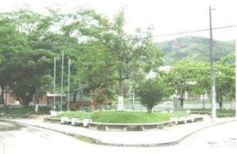
Parque Francisco Javier Cisneros
El actual Parque Francisco Javier Cisneros es un espacio urbano tranquilo y rodeado de naturaleza que, décadas atrás, tuvo un papel fundamental en la historia ferroviaria del municipio. Allí funcionaba la antigua “Ye” de inversión de los trenes, el punto donde las locomotoras cambiaban de dirección para continuar su recorrido por el Ferrocarril de Antioquia. Hoy, ese lugar de maniobras ferroviarias se ha transformado en un parque abierto a la comunidad, pero conserva intacta la memoria de un pasado que marcó el nacimiento y el desarrollo de Cisneros.
Este parque se convierte en un poderoso referente de identidad cultural porque simboliza la transformación de la historia en patrimonio vivo. Cada sendero, cada zona verde y cada rincón evocan el tiempo en que el sonido del vapor y los rieles hacía parte de la vida cotidiana del pueblo. El nombre mismo del parque honra a Francisco Javier Cisneros, el ingeniero cubano responsable de impulsar la construcción del Ferrocarril de Antioquia, obra que permitió conectar al departamento con el progreso y el comercio nacional.
Más que un espacio recreativo, el parque representa la memoria colectiva de una comunidad que nació alrededor del tren. La antigua Ye ferroviaria, convertida hoy en lugar de encuentro y descanso, demuestra cómo Cisneros ha sabido preservar las huellas de su historia y convertirlas en símbolo de pertenencia, orgullo y tradición ferroviaria.
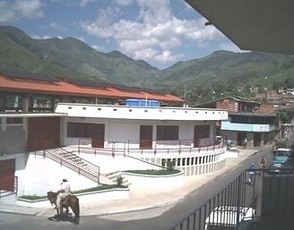
Plaza de Mercado
Octavio González
La plaza de mercado, históricamente, ha sido uno de los referentes culturales más importantes de Cisneros. Más que un espacio para comprar alimentos, representa un punto de encuentro donde convergen las costumbres, la economía, las tradiciones y la memoria colectiva de la comunidad cisnereña. En ella circulan productos, pero también historias, expresiones populares y formas de vida que fortalecen la identidad territorial.
En el municipio de Cisneros, la evolución de la plaza de mercado refleja el crecimiento urbano y social de la población. Antes de la década de 1930, el comercio de víveres y productos agrícolas se realizaba en pequeños tolditos improvisados ubicados sobre las calles del centro del municipio. Campesinos y comerciantes llegaban desde las veredas para ofrecer frutas, verduras, carnes, granos y productos artesanales en un ambiente popular y dinámico que hacía del mercado un verdadero escenario de integración comunitaria.
Posteriormente, en 2004, entró en funcionamiento una nueva plaza de mercado que continúa prestando servicio en la actualidad. Este espacio conserva la esencia tradicional del mercado popular, al tiempo que responde a las necesidades modernas del municipio, manteniendo viva una de las expresiones culturales más representativas de Cisneros.

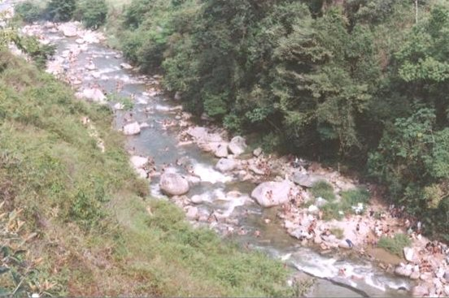
Los charcos de Cisneros
Los charcos de Cisneros se consideran un referente de identidad cultural porque han sido, durante generaciones, espacios de encuentro, diversión y conexión con la naturaleza para sus habitantes. Más que simples pozos de agua formados por las quebradas y ríos de la región, los charcos representan una tradición que hace parte de la memoria colectiva del municipio. Allí, niños, jóvenes y adultos han compartido paseos familiares, juegos, conversaciones y momentos de descanso que fortalecen los lazos comunitarios.
En épocas donde no existían piscinas ni grandes centros recreativos, los charcos eran el principal lugar de esparcimiento. Cada uno guarda historias, anécdotas y recuerdos que han pasado de padres a hijos, convirtiéndose en escenarios cargados de valor sentimental; además, reflejan la estrecha relación de la población con el paisaje montañoso y las abundantes fuentes hídricas que caracterizan el territorio cisnereño.
Los charcos también forman parte de las costumbres turísticas y económicas de la localidad, ya que atraen visitantes que buscan disfrutar de la tranquilidad y belleza natural del municipio. Por eso, son vistos como símbolos de pertenencia, tradición y orgullo cultural para la comunidad de Cisneros.

Las fiestas a la Virgen del Carmen
Las Fiestas de la Virgen del Carmen en Cisneros se consideran un importante referente de identidad cultural porque reflejan la historia, las tradiciones y la transformación social del municipio a través del tiempo. Esta celebración religiosa ha estado profundamente ligada a los oficios del transporte, actividad que durante décadas marcó la vida económica y cotidiana de la población.
Antes de los años 80, las fiestas eran organizadas principalmente por los trabajadores del Ferrocarril de Antioquia. Los ferroviarios, quienes hicieron de Cisneros un punto clave del desarrollo ferroviario del departamento, celebraban con devoción a la Virgen del Carmen como protectora de quienes viajaban y trabajaban en las líneas del tren. Las procesiones, las misas y los encuentros comunitarios fortalecían el sentido de pertenencia entre las familias vinculadas al ferrocarril.
Sin embargo, tras la desaparición del sistema ferroviario, la tradición no desapareció. Fueron los conductores y transportadores quienes asumieron la celebración, manteniendo viva la devoción y adaptándola a una nueva realidad económica basada en el transporte por carretera. Así, las fiestas simbolizan la continuidad de la memoria histórica de Cisneros y la capacidad de su comunidad para preservar sus costumbres y su identidad cultural generación tras generación.
Imágenes tomadas del Facebook de la Alcaldía de Cisneros.


Imagen tomada del Facebook de la Alcaldía de Cisneros.
La Semana Santa en Cisneros
La Semana Santa en Cisneros es considerada un referente de identidad cultural porque constituye una de las tradiciones religiosas y comunitarias más arraigadas en la memoria colectiva del municipio. Más allá de las celebraciones litúrgicas, esta conmemoración representa un espacio de encuentro familiar, unión social y conservación de costumbres transmitidas de generación en generación.
Durante décadas, la comunidad cisnereña ha participado activamente en las procesiones, eucaristías y actos religiosos que recorren las calles del municipio, demostrando la profunda fe que caracteriza a gran parte de su población. Las imágenes religiosas, los cantos, la decoración de los templos y el respeto con que se viven estos días hacen de la Semana Santa una expresión cultural que fortalece el sentido de pertenencia y la identidad local.
Además, esta celebración ha permitido mantener vivas prácticas tradicionales que unen a niños, jóvenes y adultos alrededor de la espiritualidad y el patrimonio religioso. Muchas familias conservan la costumbre de asistir juntas a las ceremonias, preparar comidas típicas de la época y recibir visitantes que regresan al municipio para compartir estas fechas especiales.
Por ello, la Semana Santa no solo representa una manifestación de fe, sino también un símbolo de continuidad histórica, tradición y cohesión social para la comunidad de Cisneros.

Imagen tomada del Facebook de la Alcaldía de Cisneros.
La Navidad en Cisneros
La Navidad en Cisneros es uno de los principales referentes de identidad cultural del municipio porque reúne las tradiciones familiares, religiosas y comunitarias que han marcado la vida de varias generaciones. Esta época del año representa un tiempo de unión, solidaridad y celebración colectiva, en el que las calles, los hogares y los espacios públicos se llenan de luces, música y expresiones de alegría que fortalecen el sentido de pertenencia de la comunidad.
Las novenas navideñas, los pesebres, los alumbrados y las reuniones familiares hacen parte de las costumbres que los cisnereños han conservado a través del tiempo. Muchas familias mantienen tradiciones heredadas de sus abuelos, como compartir natilla, buñuelos y otras comidas típicas, mientras niños y adultos participan en cantos y actividades comunitarias que fortalecen los lazos sociales.
Además, la Navidad se convierte en una época de reencuentro para muchas personas que regresan al municipio para compartir con sus seres queridos y revivir las costumbres de su tierra. Esto permite que la memoria cultural permanezca viva y siga transmitiéndose a las nuevas generaciones.
Por ello, la Navidad no solo es una celebración religiosa y festiva, sino también una manifestación de la identidad, la tradición y la cohesión social de la comunidad cisnereña.
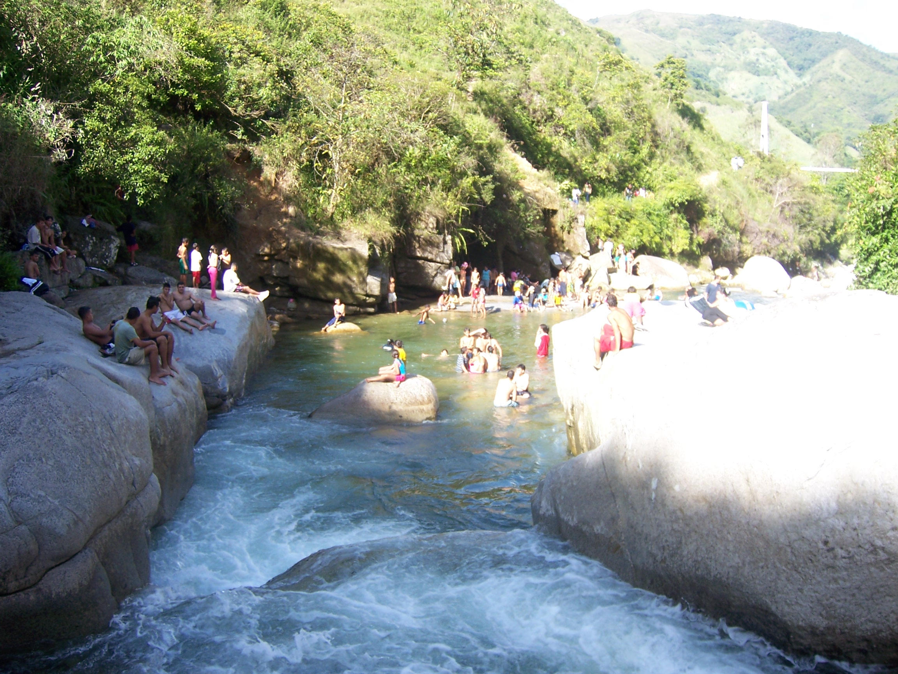
Quebrada Santa Gertrudis
La quebrada Santa Gertrudis es uno de los principales referentes naturales y turísticos de Cisneros debido a su belleza paisajística, su riqueza hídrica y el valor recreativo que representa para la comunidad y los visitantes. Sus aguas frescas, rodeadas de abundante vegetación y montañas, ofrecen un espacio ideal para el descanso, la contemplación de la naturaleza y el encuentro familiar.
La quebrada Santa Gertrudis nace en las montañas del municipio de Santo Domingo, precisamene en la vereda Santa Gertrudis, ubicada en una zona alta y boscosa de la que hereda su nombre hasta su intersección con el río Nus en Cisneros, donde bastece de agua a gran parte de su territorio. Desde allí desciende atravesando sectores rurales y veredas hasta llegar al municipio. a lo largo de su recorrido, esculpe en sus riberas y superficie, los reconocidos charcos y paisajes naturales que hoy son un importante atractivo turístico como La Bocatoma (La Represa), La Bruja, Culopelao, El Azul, El Abismo, La Planha; El Barquito, entre otros.
La Santa Gertrudis también contribuye al turismo local, atrayendo visitantes que buscan experiencias de naturaleza, tranquilidad y contacto con los paisajes característicos del Nordeste antioqueño. Por ello, la quebrada no solo representa un patrimonio ambiental, sino también un símbolo de identidad, tradición y orgullo para los habitantes de Cisneros.

Charco La Bocatoma o Represa

Hasta antes del S. XXI era reconocido como una represa, desde donde se tomaba el agua para la localidad, pero por su hermosura paisajística, color, profundidad y entorno natural y ambiental era el un atractivo turístico de mucho auge. Con la modernidad, se transformó en la bocatoma del acueducto municipal, lo cual le impide considerarlo como referente turístico natural.
Cuentan los viejos de Cisneros que, cuando el sol se oculta por el ocaso, la bruma baja espesa sobre el charco La Represa y los grillos callan de repente, es mejor no caminar solo por los senderos de la bocatoma, porque por allí, aparece La Cabellona.
Hace muchos años, vivía en la vereda Santa Gertrudis una hermosa jovencita llamada Rosalba que tenía su casa cerca de la quebrada. Era hermosa, orgullosa y conocida por su larguísimo cabello negro que le llegaba hasta las rodillas. Una noche de fin de semana en que se celebraba la fiesta de cumpleaños de la hermana de Rosalba, cegada por el miedo al abandono y las habladurías del vecindario, dejó a su pequeño hijo de apenas cinco meses dormido sobre una piedra cerca de la quebrada, mientras iba tras un hombre que le prometió llevársela para otro lugar.
El niño despertó llorando cuando el agua comenzó a acariciarle sus tiernos piececitos. La corriente, silenciosa y oscura, terminó arrastrándolo hacia las pedregosas corrientes que lo devolvieron en La Represa.
Cuando Rosalba regresó, ya era demasiado tarde. Desesperada por no encontrarlo, enloqueció
Desde entonces, cuentan que vaga escondida entre la maleza y los cañaduzales, cubierta por su inmensa cabellera enredada que ha crecido tanto, que la lanza al río desde la ribera para tomar venganza ahogando a cualquier hombre que vea solo en el río. Su llanto se mezcla con el viento y, a veces, quienes pasan cerca, escuchan una voz desesperada que susurra:
—¡Mi niño!
Si le responden, La Cabellona sale de la oscuridad con los ojos llenos de agua y culpa eterna.
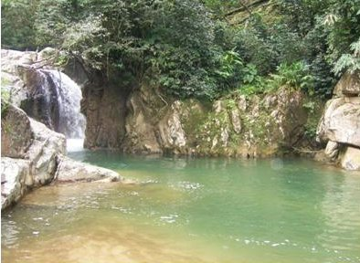
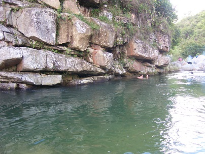
El Azul
Por su ubicación apartada y el silencio natural que lo rodea, este charco también ha sido reconocido, de manera discreta y casi legendaria entre los habitantes del municipio, como un refugio íntimo para los jóvenes enamorados.
Lejos del bullicio urbano y protegido por la espesura de la vegetación, el lugar ha sido un testigo silencioso, durante décadas, de encuentros furtivos, promesas de amor y momentos de complicidad sentimental. Más allá de cualquier interpretación romántica, esta característica hace parte de las memorias colectivas y de las historias populares que enriquecen el valor simbólico y cultural del sitio dentro de la tradición oral cisnereña.
El Azul es considerado un importantes referente natural de Cisneros porque representan la riqueza hídrica, paisajística y turística del municipio. Estes lugar se ha convertido, a lo largo del tiempo, en un espacio tradicional de recreación, descanso y encuentro comunitario, profundamente ligado a la memoria y a las costumbres de los cisnereños. Cada charco posee características naturales que lo hacen especial. Sus aguas cristalinas, las formaciones rocosas, la vegetación que los rodea y la tranquilidad del entorno ofrecen escenarios ideales para disfrutar de la naturaleza y fortalecer el turismo ecológico de la región. Además, es un sitio frecuentado por familias, jóvenes y visitantes que encuentran allí, un espacio para compartir, nadar y conectarse con el paisaje montañoso característico del Nordeste antioqueño. Este charco, también forma parte de las historias y experiencias de muchas generaciones, convirtiéndose en símbolo de identidad y pertenencia para la comunidad. Por ello, más que un atractivo naturale, El Azul, representa un patrimonio ambiental y cultural que refleja la estrecha relación de Cisneros con sus fuentes hídricas y su entorno natural. Es tanto el arraigo de los cisnereños por sus charcos que tienen como lema la expresión, 'Cisnereño que se respete, sabe nadar'.

Charco El Abismo
El charco El Abismo es uno de los referentes naturales y turísticos más llamativos de Cisneros, Antioquia, gracias a la singular belleza de sus aguas y a la experiencia extrema que ofrece a quienes lo visitan. Su principal característica es la gran profundidad que posee, contrastando con una anchura que apenas supera los tres metros, lo que le da la apariencia de una grieta natural tallada entre las rocas por la fuerza del agua durante siglos. Sus aguas de color verde cristalino reflejan la vegetación circundante y generan una atmósfera de misterio y admiración entre turistas y habitantes.
Además de su atractivo paisajístico, El Abismo se ha convertido en un escenario tradicional para los jóvenes aventureros del municipio, quienes utilizan una alta roca cercana como trampolín para realizar saltos acrobáticos hacia el agua. Estas demostraciones de valentía y destreza suelen atraer la atención de visitantes y especialmente de grupos de jóvenes turistas que llegan al lugar en busca de diversión y contacto con la naturaleza. Por estas razones, El Abismo representa no solo un patrimonio natural de gran belleza, sino también un espacio de encuentro social, recreación y memoria juvenil.
La Plancha
La Plancha es, sin duda, uno de los referentes naturales y turísticos más emblemáticos de Cisneros, Antioquia, debido a la combinación de belleza paisajística, tradición comunitaria y misterio natural que la rodea. Reconocido como el charco más visitado tanto por habitantes como por turistas, este lugar se ha consolidado como el escenario predilecto para las tradicionales sancochadas familiares y encuentros entre amigos, fortaleciendo así el sentido de identidad y convivencia alrededor de la riqueza hídrica del municipio.
Sus aguas cristalinas permiten apreciar el fondo rocoso y reflejan la abundante vegetación que lo rodea, creando un ambiente fresco y atractivo para el descanso y la recreación. Sobre ella resalta una misteriosa raya negra, uniforme y perfectamente marcada, de aproximadamente treinta centímetros de ancho, cuya procedencia nadie ha podido explicar. Esta particularidad ha alimentado relatos populares y leyendas locales, convirtiendo a La Plancha en un espacio donde convergen naturaleza, turismo y tradición oral.
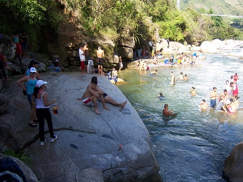
Nadie en Cisneros lograba explicar por qué aquella raya negra atravesaba la enorme roca de La Plancha como una cicatriz viva. Algunos decían que era una veta mineral; otros, que había sido quemada por un rayo siglos atrás. Pero los más viejos bajaban la voz al hablar de ella y aseguraban que respiraba cuando llegaba la medianoche.
La leyenda tomó fuerza la tarde en que desapareció Rogelio, un hombre señalado en el pueblo por abusar de niños. Lo vieron, por última vez, sentado sobre la roca desde donde la gente se tiraba al algua, tomando licor y riéndose de quienes le gritaban que se fuera porque nadie se atrevía a ir mientras él estuviera allá. Los pocos visitantes que había estaban inquietos; ni siquiera se atrevían a entrar al agua. De pronto, todo cambió: la raya negra comenzó a moverse lentamente, como si despertara de un largo sueño. En un comienzo, se creyó que era un efecto visual por el movimiento del agua. Algunos, pudieron verla cómo, en un principio, se tornaba delgada; luego, vieron que su grosor aumentaba y que daba la impresión de ser viscosa, se levantó de la piedra hasta convertirse en una gigantesca serpiente oscura de ojos negros con un brillo acuoso.
Los bañistas que había quedaron paralizados. La criatura rodeó a Rogelio mientras él gritaba y pedía ayuda. Nadie se atrevió a acercarse; todo lo contrario, casi todos, salieron despavoridos gritando. Los que se internaron en la maleza, temblando del horror, vieron cómo la enorme bestia, abrió una boca imposible, llena de agua negra y lodo, y se lo tragó entero antes de hundirse nuevamente en la roca.

El Barquito
El charco El Barquito es uno de los referentes naturales y turísticos más importantes de Cisneros, Antioquia, debido a la combinación de tranquilidad, seguridad, fácil acceso y servicios recreativos que ofrece a visitantes locales y foráneos. Su principal atractivo radica en su forma semejante a una piscina natural, característica que le brinda un aspecto organizado y agradable para quienes buscan disfrutar de las aguas del río en un ambiente cómodo y seguro.
A diferencia de otros charcos más agrestes, El Barquito se ha consolidado como un espacio familiar y social, ideal para pasar el día entre amigos o en compañía de turistas. Antes de ingresar al río, los visitantes acceden por una vivienda que está acondicionada como restaurante, vestier y bar, donde pueden guardar sus pertenencias, preparar sancochos, ordenar almuerzos caseros, escuchar música y compartir momentos de integración mientras disfrutan de bebidas alcohólicas y del entorno natural que ofrece el lugar. Esta infraestructura lo ha convertido en un punto de encuentro recreativo que fortalece la economía local y el turismo comunitario.
Además, su cercanía con la Estación del Ferrocarril, ubicada a tan solo diez minutos caminando, facilita el acceso de los turistas y lo integra al recorrido patrimonial y natural de Cisneros, consolidándolo como un destino emblemático del municipio.

La Isla Ecológica
La Isla es considerado un importantes referente natural de Cisneros porque representan la riqueza hídrica, paisajística y turística del municipio. Estes lugar se ha convertido, a lo largo del tiempo, en un espacio tradicional de recreación, descanso y encuentro comunitario, profundamente ligado a la memoria y a las costumbres de los cisnereños.
Cada charco posee características naturales que lo hacen especial. En este caso, el lugar es una formación déltica que resulta del recorrido de los dos ríos que bañan a Cisneros: la quebrada Santa Gertrudis y el río Nus que bordean el lugar, la una por el lado sur de La Isla y el otro, por el norte; justo donde no hay más tierra, el río Nus envuelve a la quebrada y se unen en uno solo. Antes de la década de los 80, este lugar se llamaba El Suribio por la cantidad de estos frondosos árboles que circundaban el lugar. Sus aguas cristalinas, las formaciones rocosas, la vegetación que los rodea y la tranquilidad del entorno ofrecen escenarios ideales para disfrutar de la naturaleza y fortalecer el turismo ecológico de la región. Además, es un sitio frecuentado por familias, jóvenes y visitantes que encuentran allí, un espacio para compartir, nadar y conectarse con el paisaje montañoso característico del Nordeste antioqueño.
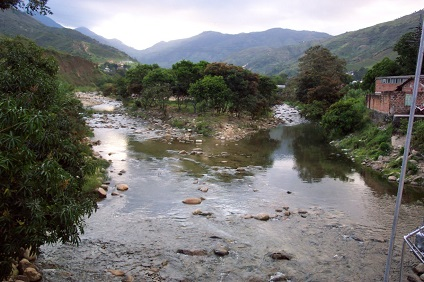
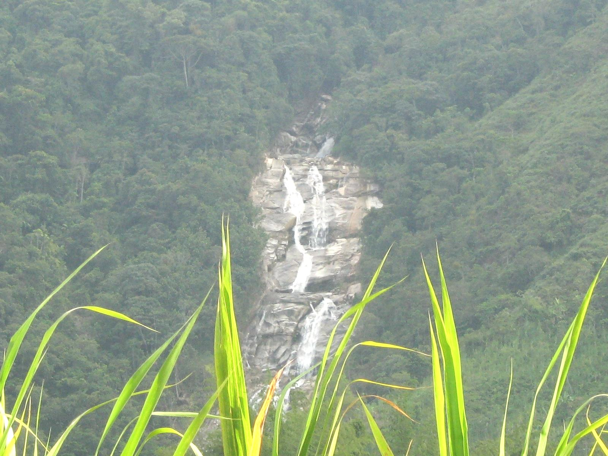
Río Nus
El río Nus es una importante corriente de agua cristalina del Magdalena Medio antioqueño. Nace en Santo Domingo a 2.000 m.s.n.m. y recorre 96 km hasta desembocar en el río Nare (Caracolí). Su cuenca destaca por su riqueza ecológica, sitios de interés ecoturístico, senderos y vestigios arqueológicos prehispánicos.
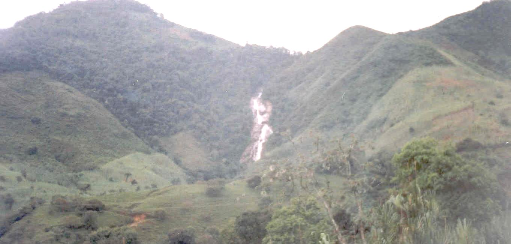
¿Ilusión optica? o realidad. Obsérvese el parecido del río a la silueta de una mujer.
En una fascinante narración (S.P.) del profesor Édgar Herrera, se narra la historia de Nusica,

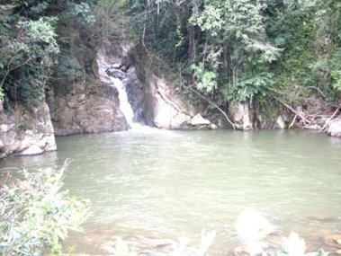
Charco La Mama
El paradisíaco Charco de la Mama, que baña cálidamente a la vereda El Silencio, en un atractivo lugar de su recorrido, lo forma la quebrada La Palmichala. Es, literalmente, un espejo de agua adornado por una destellante caída de agua y un frondoso entorno rodeado de naturaleza. Cuenta con zona de camping y estaderos cercanos y aunque es el referente natural y atractivo turístico más alejado de Cisneros, perfectamente encaja con un lugar en el que se puede interactuar con Natura. El profesor Édgar Herrera, se inspiró en él para uno de sus relatos locales que, precisamente llamó 'La Mama'.
La quebrada La Palmichala, descendía cristalina entre las piedras, desde lo más alto de una montaña que separa a Cisneros de Yolombó, formando un espejo de agua tan diáfano que, en las noches más iluminadas, reflejaba la luna como si se hubiera sumergido allí para contemplar el firmamento estrellado. En un extremo del charco, desde el alba y hasta el ocaso, a través de una boscosa garganta se podía ver cómo brotaba una cascada que brillaba bajo el sol, mientras el bosque respiraba en silencio, como si quisiera contar secretos que tenía ocultos. Era el paradisíaco Charco de la Mama, escondido entre las montañas de la vereda El Silencio, que se dejaba ver como un pedazo de cielo atrapado en la tierra.
Pero los habitantes de zona, sabían que en aquel lugar sucedían unos hechos extraños en ciertas noches del año.
Una noche de noviembre, Tomás, un visitante incrédulo, decidió comprobar si las historias eran ciertas. Llegó con una linterna y se sentó cerca de la caída de agua. Todo parecía tan tranquilo, que se tomó selfies y les envió mensajes a sus amigos señalándoles que todo era pura mierda. De pronto, el viento comenzó a girar sobre el charco. Tomás, sintió su piel erizada. El agua dejó de reflejar su rostro y, en cambio, mostró el de una anciana de ojos fogosos.
Luego, escuchó un silbido agudo e inmediatamente, del bosque salieron tres figuras flotando lentamente sobre el agua. Sus cabellos danzaban como ramas bajo una tormenta. Tomás se sintió debilitado, no podía hablar y quiso correr, pero sus piernas no le respondieron.
Desde aquella noche, nadie volvió a verlo. Sus amigos, le reenviaron las imágenes preguntándole por las figuras diabólicas que se veían detrás de él, pero fue demasiado tarde. Dicen que, en ciertas madrugadas, una cuarta sombra sobrevuela el Charco junto a las brujas y se escucha una quejambre que a través de un eco, dice: '¡Ay! ¡mi mama!'

Cascada Santa Ana en la vereda Santa Ana
Cascadas o caídas de agua de Cisneros
Las cascadas constituyen uno de los referentes naturales y turísticos más valiosos de cualquier territorio, pues representan la perfecta interacción entre el agua, el relieve, el clima y la biodiversidad. Estos espectaculares saltos de agua, formados durante miles de años por la acción constante de las corrientes sobre las rocas y montañas, son verdaderos monumentos naturales que enriquecen el paisaje y fortalecen la identidad ambiental de una región.
Cisneros, cuenta con varias cascadas que son un atractivo natural muy seductor para turistas y aventureros y amantes de la naturaleza. La más imponente es la cascada La Chorrera, que aunque no está en territorio cisnereño, sí baña las riberas de nuestra población y se encuentra en jurisdicción de la vereda El Limón que es, en parte, territorio cisnereño. Otra cascada muy atractiva, ubicada en las afueras de la localidad es El Caney que, aunque no luce con las destacadas dimensiones de La Chorrera, es muy atractiva para los locales y visitantes por su cercanía a la población. Hay otra cascada, con unas cualidades paisajísticas tan fascinantes que parece una Náyade. Está ubicada en la vereda Santa Ana, tan escondida que parece como si el mismo Poseidón le prohibiera ser disfrutada por alguien, porque en asocio con Gaia, la tienen alejada y cubierta por un ropaje espeso de maleza que la hace casi inalcanzable. hay otra a bordo de carretera, antes de llegar a la cima de La Quiebra; majestuosa y seductora; también, se pueden disfrutar cascadas alucinantes y con un poder de seducción natural incomparable, en San Germán parte alta; en la vereda San Francisco, en El Balsal y en El Silencio.
Otras cascadas

Cascada Santa Bárbara en el alto de La Quiebra

Cascada El Dos en la vereda El Dos

Cascada El Caney en el barrio El Algarrobo
Los Cerros Tutelares de Cisneros

Cerro El Monte Carmelo

Cerro El Algarrobo

Cerro El Monte Calvario
Cisneros cuenta con tres elevaciones geográficas que, por su ubicación estratégica, dominan visualmente toda su población. Se les considera una suerte de guardianas naturales, ya que tradicionalmente custodian el territorio y sirven como referentes de identidad, cultura y protección para sus habitantes.
Estos elementos icónicos de nuestro paisaje local, se caracterizan porque los tres albergan como santuario religioso a la Virgen del Carmen; así mismo, como están integrados a la zona urbana, son espacios frecuentados para el senderismo, el deporte, el turismo y la educación ambiental

Pulmón oxigenante de la zona céntrica (Calle Colón, Avenida del Ferrocarril y riberas del río Nus)
La flora de Cisneros
Cisneros, posee una flora exuberante gracias a su clima cálido y a su ubicación en el bosque húmedo tropical. En sus montañas y alrededor de sus quebradas crecen árboles nativos como suribios, almendros, mamoncillos, guayacanes, helechos, palmas y una gran diversidad de especies que están siendo inventariadas; también abundan especies como yarumos, guamos, robles y ceibas, que brindan refugio y alimento a numerosas aves y otros animales.
La cultura cisnereña es rica en el cultivo de orquídeas, símbolo de la riqueza natural colombiana y una incontable variedad de especies de jardinería que, por tradición y decoración se siembra en casi todos los hogares de la población.
Esta biodiversidad convierte a Cisneros en un lugar ideal para el ecoturismo, la observación de la naturaleza y la conservación de los ecosistemas que caracterizan el Nordeste antioqueño.

Separador de la Calle Colón decorado con una densa vegetación

Vegetación en zona nororiental

Extremo occidental: avenida del río Nus y barrio El Algarrobo

Avenida del río Nus por el corregimiento de Versalles

Avenida del río Nus por la parte suroriental de Cisneros, Parque Francisco Javier Cisneros, Avenida del Ferrocarril y Cera Larga

Villa Nelly, al nororiente de la localidad

Pulmón verde de la zona nororiental

Barrio Clavellina, un pulmón verde

Cisneros visto desde el oriente, rodeado de una amplia variedad de flora

Cisneros visto desde el nororiente

Cisneros visto desde el suroccidente

Fotosíntesis cisnereña

Solemne procesión con el Corpus Christi
Las conmemoraciones religiosas en Cisneros
La Semana Santa, el Corpus Christi, el Día de la Virgen del Carmen, el Día de los Muertos y la Navidad constituyen valiosos referentes de identidad cultural de la comunidad de Cisneros. Estos homenajes, que han sido transmitidos de generación en generación, fortalecen el sentido de pertenencia, preservan tradiciones y promueven la unión entre los habitantes de esta localidad. A través de procesiones, expresiones artísticas, rituales, encuentros familiares y manifestaciones de fe, se mantienen vivas las raíces históricas y culturales de la población. Más que simples festividades, representan espacios de memoria colectiva, convivencia y reconocimiento de los valores que definen el carácter y la riqueza cultural de este lugar.

Multitudinaria peregrinación con la Virgen del Carmen

Procesión del Domingo de Ramos. Apertura de la Semana Santa

Escena del Domingo de Resurrección en la Semana Santa
Otras festividades religiosas
San Isidro (o Fiestas del campesino) y la Navidad.

Escena de la tributación a San Isidro en la Fiesta del Campesino

Novena de aguinaldos. Apertura a la Navidad

Día de los fieles difuntos

Unidad deportiva Las Camelias en los años 80
El deporte en Cisneros
El deporte, de la misma manera, como los demás referentes identitarios y culturales, reflejan los valores, tradiciones y formas de vida de una comunidad. A través de las prácticas deportivas, los cisnereños han fortalecido y fortalecen el sentido de pertenencia, la solidaridad, el respeto y el trabajo en equipo. Cabe resaltar también, que los eventos deportivos reúnen a familias, amigos y vecinos, generando espacios de encuentro que fortalecen los lazos sociales y la cohesión comunitaria. Muchas disciplinas deportivas, en especial las del fútbol, baloncesto, ciclismo y atletismo, están ligadas a la historia de este territorio y han sido transmitidas de generación en generación, convirtiéndose en parte de su patrimonio cultural. Asimismo, los logros de deportistas locales, despiertan orgullo colectivo y contribuyen a proyectar una imagen positiva de la localidad. El deporte también favorece la inclusión social, promueve estilos de vida saludables y fomenta la participación ciudadana. Por estas razones, constituye una manifestación cultural que fortalece la identidad individual y colectiva de los cisnereños, preservando costumbres y valores que distinguen a esta comunidad de otras.
Otros escenarios deportivos

Niños jugando en la Cancha de fútbol en el barrio La Cristalina

Estudiantes jugando en la placa polideportiva del Liceo Cisneros

Ciudadanos jugando en la placa polideportiva de la Casa de la Cultura

Jóvenes jugando en el Centro de integración ciudadana en el barrio Catacas
Cisneros cuenta con una infraestructura deportiva bastante robusta en donde se desarrollan múltiples justas en diferentes modalidades.
Referentes para el esparcimiento

Cabaña del Hotel y Centro recreativo Gulungos
Referentes para el esparcimiento
Cisneros ofrece diversos referentes recreativos que invitan al encuentro con la naturaleza, la cultura y el descanso. Además de sus charcos, senderos, zonas verdes y quebradas, se cuenta con una amplia oferta de destinos ideales que brindan espacios para caminar, compartir en familia y conocer otras fortalezas del municipio; asimismo, disfrutar de sus servicios de forma más íntima.
Entre ellos están los hoteles Gulungos, La Gabriela, Casablanca, Rancho Alegre, la Hostería, entre otros. En este orden de ideas, Cisneros es un lugar perfecto para el esparcimiento, el turismo y la integración comunitaria.

Centro de atención del Hotel Centro recreativo Gulungos

Zona húmeda del Hotel Centro recreativo Gulungos
Hotel Club Casa Blanca

Hotel Club Casa Blanca

Zona húmeda Hotel Club Casa Blanca

Hotel Centro recreativo Casa Blanca
Centro recreativo y restaurante El Faro

Centro recreativo y restaurante El Faro

Canopy en El Faro. El 2° más largo de LATAM

Telesillas en El Faro

Sede alterna a El Faro. Deporte extremo

Sede alterna de El Faro en el corregimiento Versalles. Restaurante y deporte extremo
Estadero La Gabriela
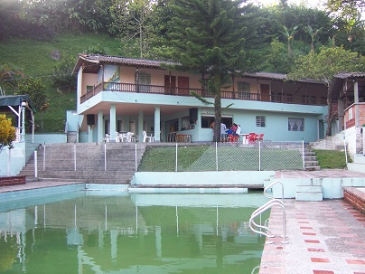
Estadero La Gabriela
Estadero La Gabriela
Hostería Puertas del Nus

Hostería Puertas del Nus

Zona húmeda y alojamientos de La Hostería
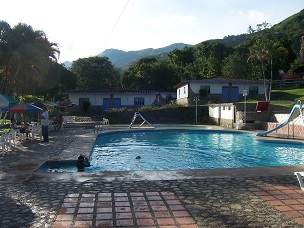
Piscina de La Hostería
Balneario, hotel y restaurante Rancho Alegre

Entrada a bordo de carretera

Alojamientos y amplios parqueaderos
Referencias bibliográficas y webgráficas
FUENTES
- Alcaldia de Cisneros. (2024). Plan de Desarrollo Municipal 2024-2027. ↩ (a, b, c)
- Enciclopedia Banrepcultural. (2025). Francisco Javier Cisneros. ↩ (a, b, c)
- El Colombiano. (2026). Cisneros ha vivido 116 anos de su historia a todo tren. ↩
- Gobernacion de Antioquia. (2024). Tunel de La Quiebra: Obra de ingenieria antioquena. ↩
- García, J. (2019). Historia del Ferrocarril de Antioquia. ↩ (a, b)
- Herrera Morales, E. (2010). Recreación Artístico-ambiental de Cisneros, su gente y su historia. ↩ (a, b, c)
- Lopez Restrepo, A. (1899). El paso de La Quiebra en el Ferrocarril de Antioquia. Tesis de grado. ↩
- Medellín Travel. Guía turística de Cisneros: atractivos naturales, históricos y gastronómicos, información logística y prestadores de servicios turísticos. https://www.medellin.travel ↩
- Turismo Antioquia. (2023). Cisneros: Tierra de ferrocarriles. ↩
Quiz: Cuanto sabes sobre Cisneros?

Powered by
Profesor Édgar Herrera Morales 2026